Chapter 13 Meta-analysis and Publication Bias
When several research teams work on a similar topic, they obtain and publish several estimates for the same program of for similar programs. For example, teams of doctors regularly test the same treatment on different samples or populations in order to refine the estimated effect. Similarly, economists report on the effects of similar types of programs (Conditional and Unconditional Cash Transfers, Job Training Programs, microcredit, etc) implemented in different countries.
Meta-analysis aims at summarizing and synthetizing the available evidence with two main goals in mind:
- Increasing precision by providing an average estimated effect combining several estimates
- Explaining variations in treatment effectiveness by relating changes in effect size to changes in sample characteristics.
One key issue that meta-analysis has to face – actually, we all have to face it, meta-analysis simply makes it more apparent – is that of publication bias. Publication bias is due to the fact that referees and editors have a marked preference for publishing statistically significant results. The problem with this approach is that the distribution of published results is going to be censored on the left: we will have more statistically significant results in the published record, and as a consequence, the average published result will be an upward biased estimate of the true treatment effect in the population. This is potentially a very severe problem if the amount of censoring due to publication bias is large. Eventually, this hinges on the true distribution of treatment effects: if it is centered on zero or close to zero, we run the risk of having very large publication bias.
In this chapter, I present first the tools for meta-analysis, and I then move on to testing and correcting for publication bias.
Most of the material presented here stems from the reference book by Hedges and Olkin.
When needed, I update this book with new references that I then cite.
the R code comes mainly from a wonderful set of slides explaining of the metafor package works.
13.1 Meta-analysis
There are several approaches and refinements to meta-analysis. In this section, I am going to present only the most important ones. I’ll defer the reader to other more specialized publications if needed.
I first present the basics of meta-analysis: the constitution and structure of the sample. Second, I present the problems of the intuitive “vote-counting” method. Third, I present the methods used when treatment effects are homogeneous across studies, called fixed effects models. Fourth, I move to the methods used when effects are heterogeneous across studies, or random effects models, and the tests used to decide whether we are in a fixed or random effects framework. Fifth, I present meta-regression, that tries to capture treatment effect heterogeneity by including covariates. Finally, I present constantly updated meta-analysis, a way to aggregate results of individual studies as they come.
13.1.1 Basic setting
The basic setting for a meta-analysis is that you have access to a list of estimates for the effect of a given program and for their precision. These estimates come from the literature, searching published and unpublished sources alike. This data is usually collected after an extensive search of bibliographic databases. Then, one has to select among all the studies selected by the search the ones that are actualy relevant. This is the most excruciating part of a meta-analysis, since a lot of the studies selected by hte search algorithm are actually irrelevant. Finally, one has to extract from each relevant paper an estimate of the effect of the treatment and of its precision. In general, one tries to choose standardized estimates such as the effect size (see Section 2.1.6 for a definition) and its standard error. After all this process, we should end up with a dataset like: \(\left\{(\hat{\theta}_k,\hat{\sigma}_k)\right\}_{k=1}^N\), with \(\hat{\theta}_k\) the estimated effect size, \(\hat{\sigma}_k\) its estimated standard error, and \(N\) the number of included studies.
N.sample <- c(100,1000,10000,100000)
N.plot.ES.CLT <- c(10,7,2,1)
data.meta <- data.frame(ES=numeric(),
se=numeric())
se.ww.CLT.ES <- function(N,v1,v0,p){
return(sqrt((v1/p+v0/(1-p))/N)/v0)
}
for (k in 1:length(N.sample)){
set.seed(1234)
simuls.ww[[k]]$se.ES <- se.ww.CLT.ES(N.sample[[k]],simuls.ww[[k]][,'V1'],simuls.ww[[k]][,'V0'],simuls.ww[[k]][,'p'])
test.ES <- simuls.ww[[k]][sample(N.plot.ES.CLT[[k]]),c('ES','se.ES')]
test.ES$N <- rep(N.sample[[k]],N.plot.ES.CLT[[k]])
data.meta <- rbind(data.meta,test.ES)
}
data.meta$id <- 1:nrow(data.meta)
#data.meta$N <- factor(data.meta$N,levels(N.sample))
ggplot(data.meta, aes(x=as.factor(id), y=ES)) +
geom_bar(position=position_dodge(), stat="identity", colour='black') +
geom_errorbar(aes(ymin=ES-qnorm((delta.2+1)/2)*se.ES, ymax=ES+qnorm((delta.2+1)/2)*se.ES), width=.2,position=position_dodge(.9),color='blue') +
geom_hline(aes(yintercept=ES(param)), colour="#990000", linetype="dashed")+
xlab("Studies")+
ylab("Effect size")+
theme_bw()
Figure 13.1: Example data set: effect sizes and confidence intervals with \(\delta=\) 0.95
Figure 13.1 shows the resulting sample. I’ve selected 10 studies with \(N=\) 100, 7 studies with \(N=\) 1000, 2 studies with \(N=\) 10^{4}, and 1 study with \(N=\) 10^{5}. The studies are represented in that order, mimicking the increasing sample size of studies that accumulate evidence on a treatment, probably with studies with a small sample size at first, and only large studies at the end for the most promising treatments.
13.1.2 Why vote-counting does not work
Vote-counting is an alternative to weighted average or meta-regression. The term, coined by Light and Smith (1971), refers to the practice of counting the number of studies that fall under one of three categories:
- Significant and positive,
- Insignificant,
- Significant and negative.
A vote-counting approach concludes that there is evidence in favor of the treatment when the majority of effects fall in the first category, that there is no evidence that the treatment has an impact whenthe majority of studies fall in the second category, and that there is evidence that the treatment is defavorable when the majority of studies fall in the third category. In general, majority is evaluated at 33%.
The main problem with the vote counting approach is that it does not give more weight to more precise studies. As a consequence, there is a very realistic possibility that the probability of finding the truth decrease as we add more studies to the meta-analysis.
Let’s see how this could happen with a simulation taken from HEdges and Olkin’s book. Let \(p\) be the probaility that a given result is significant and positive. \(p\) depends on the sample size \(n\) of the study, and on the true treatment effect, \(\theta\):
\[\begin{align*} p & = \int_{C_{\alpha}}^{\infty}f(t;\theta,n), \end{align*}\]
where \(f\) is the density of the test statistic \(T\) used to evaluate whether the effect is significant or not, and \(C_{\alpha}\) is the critical value of the test \(T\). If \(n\) and \(\theta\) are constant over studies (for simplicity), the process of accumulating significant results can be modelled as a binomial with parameter \(p\). The probability that over \(K\) studies, we have a proportion of significant results larger than a pre-specified threshold (let’s say \(C_0\)) is equal to:
\[\begin{align*} \Pr(\frac{X}{K}>C_0) & = \sum_{k=\text{int}(C_{0}k)+1}^{K}\left(\begin{array}{c}K\\k\end{array}\right)p^k(1-p)^{K-k}, \end{align*}\]
where \(\text{int}(a)\) is the greatest integer larger or equal to \(a\) and \(0\leq C_0\leq 1\). In order to use this formula, we simply have to choose a test. Let’s choose the two-sided t-test of a zero treatment effect in an RCT with equal tozes for treated and control groups. In that case, \(p\) is simply the power of the test. In Chapter 7, we have derived a formula for the power of this test when \(N\) is large:
\[\begin{align*} \kappa & = \Phi\left(\frac{\beta_A}{\sqrt{\var{\hat{E}}}}-\Phi^{-1}\left(1-\frac{\alpha}{2}\right)\right), \end{align*}\]
with \(\var{\hat{E}}=\frac{C(\hat{E})}{N}\) and \(C(\hat{E})\) the variance of the estimator across sampling replications. Let’s make the simplifying assumption that the treatment effect is constant, so that the variance of the estimator is basically the variance of the outcomes. Let’s also assume that we are working with effect sizes, so that our outcomes are normalized to have mean zero and variance one. Under these assumptions, \(C(\hat{E})=1\) and we can implement the power formula:
PowerTwoside <- function(betaA,alpha,N,CE=1){
return(pnorm(-betaA/sqrt(CE/N)-qnorm(1-alpha/2))+pnorm(betaA/sqrt(CE/N)-qnorm(1-alpha/2)))
}
PowerTwosideStudent <- function(betaA,alpha,N,CE=1){
return(pt(-betaA/sqrt(CE/N)-qnorm(1-alpha/2),df=N-1)+pt(betaA/sqrt(CE/N)-qnorm(1-alpha/2),df=N-1))
}
VoteCounting <- function(betaA,C0,K,...){
return(pbinom(q=C0*K,size=K,prob=PowerTwosideStudent(betaA=betaA,...),lower.tail = FALSE))
}
PowerTwosideStudent(betaA=0.1,alpha=0.05,N=300)
VoteCounting(C0=.33,K=3000,betaA=0.1,alpha=0.05,N=300)
Sample.size <- c(20,50,100,200,300)
BetaA <- seq(0.1,1.5,by=0.1)
K.list <- c(10,20,30,50,100,1000)
power.vote <- data.frame("Power"= 0,'BetaA'= 0,'N'= 0,'K'= 0)
#power.vote <- sapply(BetaA,VoteCounting,C0=.33,K=K.list[[1]],alpha=0.05,N=Sample.size[[1]])
#power.vote <- cbind(power.vote,BetaA,Sample.size[[1]],K.list[[1]])
for (j in (1:length(K.list))){
for (k in (1:length(Sample.size))){
power.vote.int <- sapply(BetaA,VoteCounting,C0=.33,K=K.list[[j]],alpha=0.05,N=Sample.size[[k]])
power.vote.int <- cbind(power.vote.int,BetaA,Sample.size[[k]],K.list[[j]])
colnames(power.vote.int) <- c('Power','BetaA','N','K')
power.vote <- rbind(power.vote,power.vote.int)
}
}
power.vote <- power.vote[-1,]
power.vote$K.int <- power.vote$K
power.vote$K <- as.factor(power.vote$K)
#ggplot(data=filter(power.vote,K==10),aes(x=N,y=Power,group=as.factor(BetaA),shape=as.factor(BetaA),color=as.factor(BetaA)))+
# geom_line()+
# geom_point()
ggplot(data=filter(power.vote,BetaA==0.1),aes(x=N,y=Power,group=K,shape=K,color=K))+
geom_line()+
geom_point()+
xlab("N (BetaA=0.1)")+
ylab("Detection probability of the vote counting rule")+
theme_bw() +
scale_fill_discrete(name="K")
ggplot(data=filter(power.vote,BetaA==0.2),aes(x=N,y=Power,group=K,shape=K,color=K))+
geom_line()+
geom_point()+
xlab("N (BetaA=0.2)")+
ylab("Detection probability of the vote counting rule")+
theme_bw()

Figure 13.2: Detection probability of the vote counting rule
Figure 13.2 shows that the vote counting rule has a very inconvenient property: when the power of the test is lower than 33%, the probability that the vote counting rule detects a true effect decreases with the number of studies included in the meta-analysis, and converges to zero when the number of studies gets large.
For example, when \(N=100\) and \(\beta_A=0.1\), the probability of detecting the effect using the vote counting method is equal to 0.076 with \(K=10\) studies and decreases to 0.043 when \(K=20\), and 0 when \(K=100\).
The pattern is reverse for more powerful studies, such as when \(N=300\) and \(\beta_A=0.1\) or when \(N=100\) and \(\beta_A=0.2\).
The intuition for this result is that the vote counting method does not average out the sampling noise in each individual study.
13.1.3 Meta-analysis when treatment effects are homogeneous: the fixed effects approach
The key idea of meta-analysis with fixed effects is to combine the effect size estimates stemming from different studies, weighing them by their relative precision.
Under some assumptions, the estimator \(\bar{\theta}\) converges to the true effect of the treatment. Let’s delineate these assumptions.
Assumption 13.2 imposes that all the studies have been drawn from the same population, where the treatment effect is a constant.
Assumption 13.3 imposes that all the studies estimates are independent from each other. That means that they do not share sampling units and that they are not affected by common shocks.
Under these assumptions, we can show two important results.
Theorem 13.1 says that the error we are making around the true effect of the treatment goes to zero as the sample size in each study decrease. This is great: aggregating the studies is thus going to get us to the truth.
Check if this is a consequence of Kolmogorov’s Law of Large Numbers.
Theorem 13.2 shows that the distribution of the weighted meta-analytic estimator converges to a normal, which is very convenient in order to compute sampling noise. In order to obtain an estimator \(\hat{\sigma}^2\) of the variance of the meta-analytic estimator, we can simply replace the individual variance terms by their estimates: \(\hat{\sigma}_k^2\).
wmae <- function(theta,sigma2){
return(c(weighted.mean(theta,(1/sigma2)/(sum(1/sigma2))),1/sum(1/sigma2)))
}The estimated treatment effect size with our sample is 0.19 \(\pm\) 0.02.
A very simple way to implement such an estimator in R is to use the rma command of the metafor package.
data.meta$var.ES <- data.meta$se.ES^2
meta.example.FE <- rma(yi = data.meta$ES,vi=data.meta$var.ES,method="FE")
summary(meta.example.FE)##
## Fixed-Effects Model (k = 20)
##
## logLik deviance AIC BIC AICc
## 16.1375 12.7060 -30.2751 -29.2793 -30.0529
##
## I^2 (total heterogeneity / total variability): 0.00%
## H^2 (total variability / sampling variability): 0.67
##
## Test for Heterogeneity:
## Q(df = 19) = 12.7060, p-val = 0.8533
##
## Model Results:
##
## estimate se zval pval ci.lb ci.ub
## 0.1950 0.0079 24.6975 <.0001 0.1795 0.2104 ***
##
## ---
## Signif. codes: 0 '***' 0.001 '**' 0.01 '*' 0.05 '.' 0.1 ' ' 1As seen above, the metafor package yields a meta-analytic estimate of 0.19 \(\pm\) 0.02, as we have found using the weighted meta-analytic estimator.
It is customary to present the results of a meta-analysis using a forest plot.
A forest plows all the individual estimates along with the aggregated estimate.
Figure 13.3 presents the forest plot for our example using the very convenient forest function in the metafor package:
forest(meta.example.FE,slab = paste('Study',data.meta$id,sep=' '),xlab='Estimated Meta-analytic Parameter')
Figure 13.3: Example data set: forest plot
13.1.4 Meta-analysis when treatment effects are heterogeneous: the random effects approach
One key assumption that we have just made so far is that of homogeneous treatment effect. We have worked under the assumption that each study was drawn from the same population, where the treatment effect is a constant. Why would the treatment effects differ in each study?
- We do not study exactly the same treatment, but a family of similar treatments. Each individual study covers a particular iteration of the treatment, each with its idiosyncratic parameterization. The particular value of the transfer in a Cash Transfer program, or of the conditions to receive it, or the length of payment, whether it is in one time or over some period, might make a difference, for example. The same is true for Job Training Programs, Payments for Environmental Services, microcredit, graduation programs, nudges, etc. Actually, most programs that economists study differ from one implementation to the next. In psychology and medecine, most treatments are accompanied by a rigorous protocol that makes them much more homogeneous.
- The population on which the treatment is applied varies. For example, similar Job Training Programs or microcredit initiatives might have very different outcomes depending on the business cycle. Education interventions might have very different effects depending on the background of the students on which they are tested. A drug might interact with patients’ phenotype and genotype to generate different effects, and the populations from which the experimental samples are drawn do not have to be similar. As an extreme example, think of a vaccine tested in a population where the prevalence of a disease is null. The treatment effect is zero. Now, test the vaccine in a population where the disease is endemic: the treatment effect might be huge.
When each study draws a treatment effect from a distinct population, meta-analysis has to take into account that treatment effects are heterogeneous. The main consequence of treatment effect heterogeneity is that the weighting approach we have used so far underestimates the uncertainty around the true effect, since it does not acknowledge that there is additional variation within each study.
There are two main ways to account for heterogeneity in meta-analysis:
- Random effects allowing for additional random noise in each study.
- Meta-regression trying to capture the heterogeneity in treatment effects with observed covariates.
In this section, we study the random effects estimator, and the next section will cover the meta-regression estimator. Before implementing the random effects estimator, we need to decide whether there is heterogeneity in treatment effects or not.
Generate noise right now and show the plot.
13.1.4.1 Estimating the heterogeneity of treatment effects
A necessary first step is to estimate the variance in treatment effects that is due to treatment effect heterogeneity, beyond sampling noise. The observed effect size estimate for a given study \(k\) is modelled as follows:
\[\begin{align*} \hat{\theta}_k & = \alpha + \epsilon_k + \nu_k, \end{align*}\]
where \(\epsilon_k\) is due to sampling noise and \(\nu_k\) is due to the heterogeneity in effect sizes across sites, while \(\alpha\) is the average of the effect size accross all populations. We denote the variance of \(\nu_k\) as \(\tau^2\). \(\nu_k\) is the random effect that gives the random effects approach its name.
There are several ways to estimate this variation. I’m gooing to start with the most intuitive one, Hedges’ estimator, and I’ll then move on to the other ones available. I’ll conclude with the formal statistical tests used to decide whether treatment effects are heterogeneous or not.
13.1.4.1.1 Hedges’ estimator of treatment effect heterogeneity
Since Hedges, \(\tau^2\) is estimated as the residual variance in effect sizes that is not explained by sampling noise. In order to compute this estimator, first estimate the overall variance in \(\hat{\theta}_k\), then estimate the component of the variance due to sampling noise and finally take the difference between the two. Hedges’ estimator of the overall variance in effect sizes is:
\[\begin{align*} \hat{\tau}^2 & = \hat{\sigma}^2_{tot}-\hat{\sigma}^2_{\epsilon}, \end{align*}\]
with
\[\begin{align*} \hat{\sigma^2_{tot}} & = \frac{1}{N}\sum_{k=1}^N(\hat{\theta}_k-\bar{\theta}_u)^2\\ \bar{\theta}_u & = \frac{1}{N}\sum_{k=1}^N\hat{\theta}_k \\ \hat{\sigma^2_{\epsilon}} & = \frac{1}{N}\sum_{k=1}^N\hat{\sigma}_k^2. \end{align*}\]
Let’s first define a few functions to compute each part:
tau.2 <- function(theta,vartheta){
return(var(theta)-mean(vartheta))
}
tau.2.theta <- tau.2(data.meta$ES,data.meta$se.ES^2)Our estimate of \(\tau^2\) in our example is thus -0.03. This estimate is small, suggesting that there is no additional variance in the treatment effects on top of sammling variation, as we know is the case and has already been suggested by the results of the \(Q\) statistic. Let’s now create a new sample of effect sizes where we add noise to each estimate stemming not from sampling, but from heterogeneity in treatment effects across sites and studies.
tau <- c(0.5,1)
set.seed(1234)
data.meta$theta.1 <- data.meta$ES + rnorm(nrow(data.meta),mean=0,sd=tau[[1]])
data.meta$theta.2 <- data.meta$ES + rnorm(nrow(data.meta),mean=0,sd=tau[[2]])I’ve simulated two new vectors of estimates for \(\theta\), both obtained adding a mean-zero normally distributed noise to the initial estimates of \(\theta\), one with a standard deviation of 0.5 and the other of 1. Let’s visualize our two new datasets:
ggplot(data.meta, aes(x=as.factor(id), y=ES)) +
geom_bar(position=position_dodge(), stat="identity", colour='black') +
geom_errorbar(aes(ymin=ES-qnorm((delta.2+1)/2)*se.ES, ymax=ES+qnorm((delta.2+1)/2)*se.ES), width=.2,position=position_dodge(.9),color='blue') +
geom_hline(aes(yintercept=ES(param)), colour="#990000", linetype="dashed")+
xlab(expression(paste('Studies',tau^2,'=',0,sep=' ')))+
ylab("Effect size")+
theme_bw()+
ylim(-2,2)
ggplot(data.meta, aes(x=as.factor(id), y=theta.1)) +
geom_bar(position=position_dodge(), stat="identity", colour='black') +
geom_errorbar(aes(ymin=theta.1-qnorm((delta.2+1)/2)*se.ES, ymax=theta.1+qnorm((delta.2+1)/2)*se.ES), width=.2,position=position_dodge(.9),color='blue') +
geom_hline(aes(yintercept=ES(param)), colour="#990000", linetype="dashed")+
xlab(expression(paste('Studies',tau^2,'=',tau[[1]],sep=' ')))+
ylab("Effect size")+
theme_bw()+
ylim(-2,2)
ggplot(data.meta, aes(x=as.factor(id), y=theta.2)) +
geom_bar(position=position_dodge(), stat="identity", colour='black') +
geom_errorbar(aes(ymin=theta.2-qnorm((delta.2+1)/2)*se.ES, ymax=theta.2+qnorm((delta.2+1)/2)*se.ES), width=.2,position=position_dodge(.9),color='blue') +
geom_hline(aes(yintercept=ES(param)), colour="#990000", linetype="dashed")+
xlab(expression(paste('Studies',tau^2,'=',tau[[2]],sep=' ')))+
ylab("Effect size")+
theme_bw()+
ylim(-2,2) 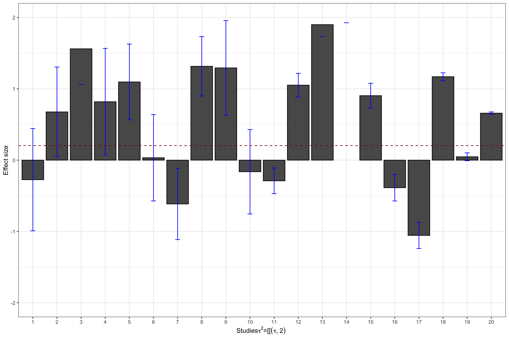
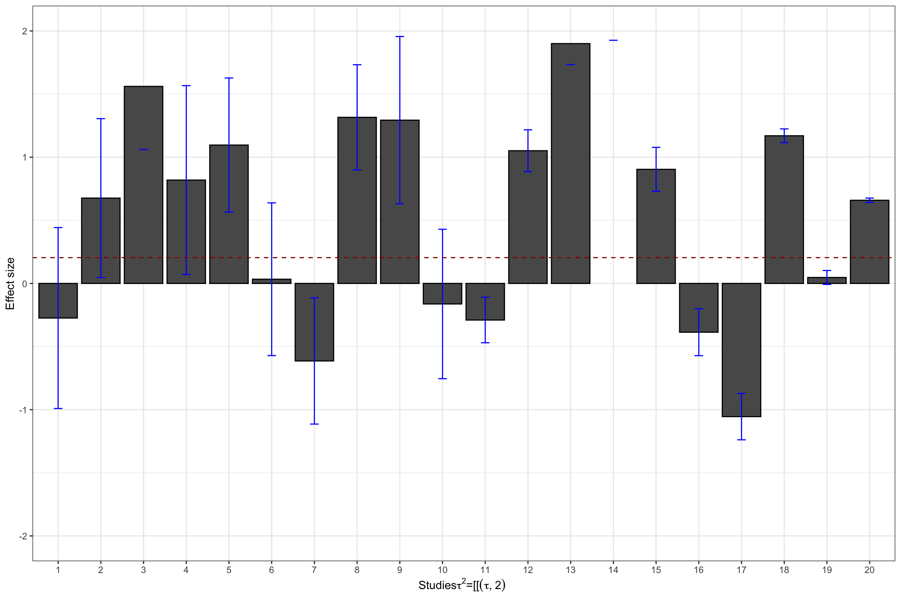
Figure 13.4: Datasets with treatment effect heterogeneity
Let’s see now how Hedge’s estimator performs:
tau.2.theta.1 <- tau.2(data.meta$theta.1,data.meta$se.ES^2)
tau.2.theta.2 <- tau.2(data.meta$theta.2,data.meta$se.ES^2)Hedges’ estimates of \(\tau^2\) in our examples are thus 0.2 and 0.73 respectively, while the true values are, respectively 0.25 and 1.
13.1.4.1.2 Other estimators of treatment effects heterogeneity
\(\tau^2\) is a pretty difficult measure of treatment effect heterogeneity to interpret. That’s why other indicators have been built that are easier to interpret. We are going to review several of them in this section.
The first alternative or complement to \(\tau^2\) is Higgin’s \(I^2\):
\[\begin{align*} I^2 & = \frac{Q-(N-1)}{Q}*100 \end{align*}\]
The interpretation of \(I^2\) is pretty straightforward: it is the distance between the actual value of the \(Q\) statistic and its value under the null of treatment effect homogeneity (it is equal to the number of studies \(N\), with a correction for degress of freedom). It can also be interpreted as the fraction of the overall variance (remember that \(Q\) is the sum of variance ratios) that is not explained by within study sampling noise.
Another complement to \(\tau^2\) is \(H^2\):
\[\begin{align*} H^2 & = \frac{Q}{N-1} \end{align*}\]
If \(H^2\) is above one, then there is unexplained heterogeneity, again by the fact that \(Q\) has mean \(N-1\) under the null of treatment effect homogeneity.
Finally, we can also define the Intra Class Correlation (\(ICC\)), which precisely measures the share of total variance attributable to treatment effect heterogeneity:
\[\begin{align*} ICC & = \frac{\tau^2}{\tau^2+S^2} \end{align*}\]
Where \(S^2\) is the amount of variance due to sampling noise. An estimator for \(S^2\) is:
\[\begin{align*} S^2 & = \frac{(N-1)\sum_{k=1}^N\frac{1}{\sigma^2_k}}{(\sum_{k=1}^N\frac{1}{\sigma^2_k})^2-\sum_{k=1}^N(\frac{1}{\sigma^2_k})^2}. \end{align*}\]
I do not understand the formula for \(S^2\). Why does it estimate what we want? I’d take the average variance.
\(ICC\) and \(I^2\) are related by the following very simple relation: \(I^2=ICC*100\).
rma computes these estimators by default, so that a simple call to summary() is going to show them.
The default random effects estimator is REML, which is deemed to be the best of them all according to simulations (Viechtbauer, 2002).
meta.example.RE.ES <- rma(yi = data.meta$ES,vi=data.meta$var.ES)
meta.example.RE.theta.1 <- rma(yi = data.meta$theta.1,vi=data.meta$var.ES)
meta.example.RE.theta.2 <- rma(yi = data.meta$theta.2,vi=data.meta$var.ES)
tau2.hat <- c(meta.example.RE.ES$tau2,meta.example.RE.theta.1$tau2,meta.example.RE.theta.2$tau2)
I2 <- c(meta.example.RE.theta.1$I2,meta.example.RE.theta.2$I2,meta.example.RE.ES$I2)
H2 <- c(meta.example.RE.theta.1$H2,meta.example.RE.theta.2$H2,meta.example.RE.ES$H2)
# illustration of results returned by summary
summary(meta.example.RE.theta.2)##
## Random-Effects Model (k = 20; tau^2 estimator: REML)
##
## logLik deviance AIC BIC AICc
## -24.7208 49.4417 53.4417 55.3305 54.1917
##
## tau^2 (estimated amount of total heterogeneity): 0.7507 (SE = 0.2583)
## tau (square root of estimated tau^2 value): 0.8664
## I^2 (total heterogeneity / total variability): 99.59%
## H^2 (total variability / sampling variability): 241.82
##
## Test for Heterogeneity:
## Q(df = 19) = 1927.7020, p-val < .0001
##
## Model Results:
##
## estimate se zval pval ci.lb ci.ub
## 0.6015 0.1997 3.0127 0.0026 0.2102 0.9929 **
##
## ---
## Signif. codes: 0 '***' 0.001 '**' 0.01 '*' 0.05 '.' 0.1 ' ' 1The estimate of \(I^2\) in our example is of 0 when \(\tau^2\) is equal to 0, of 98.71 when \(\tau^2\) is equal to 0.25 and of 99.59 when \(\tau^2\) is equal to 1. The estimate of \(H^2\) in our example is of 1 when \(\tau^2\) is equal to 0, of 77.4 when \(\tau^2\) is equal to 0.25 and of 241.82 when \(\tau^2\) is equal to 1.
13.1.4.1.3 Testing for the homogeneity of treatment effects
What can we do in order to test whether there is heterogeneity in treatment effects? One way is to build an index comparing the usual variation in treatment effects stemming from sampling noise to the one stemming from variation between studies. If we find that the variation between studies dwarves the variation due to sampling noise in each study, then there is some heterogeneity for sure. One statistics that does that is the \(Q\) statistic where the variation in treatment effects between studies is estimated using the difference between the individual effect size and the average one squared:
\[\begin{align*} Q & = \sum_{k=1}^N\frac{(\hat{\theta}_k-\bar{\theta})^2}{\hat{\sigma}^2_k}. \end{align*}\]
What is great with the \(Q\) statistic is that, under the Null hypothesis that all the treatment effects are equal to the same constant, it is distributed asymptotically as a \(\chi^2\) distribution with \(N-1\) degrees of freedom, and thus it can directly be used to test for the hypothesis of homogeneous treatment effects.
rma function in the metafor package.
In order to access it, we just need to extract it using meta.example.FE$QE for the \(Q\) statistic and meta.example.FE$QEp for its p-value.
The \(Q\) statistic in our example has value 12.71, with associated p-value 0.85. We end up not rejecting homogeneity, which is correct.
Test with \(N=10^5\).
13.1.4.2 Random effects models
Hedges proposes a new estimator for the average effect of the treatment, an estimator that accounts for the additional noise due to heterogeneous treatment effects accross sites.
Hwmae <- function(theta,sigma2,tau2){
return(c(weighted.mean(theta,(1/sigma2)/(sum(1/(sigma2+tau2))),1/sum(1/sigma2+tau2))))
}
ES.H.theta.1 <- Hwmae(data.meta$theta.1,data.meta$se.ES^2,tau.2.theta.1)
ES.H.theta.2 <- Hwmae(data.meta$theta.2,data.meta$se.ES^2,tau.2.theta.2)Hedges’ estimates of the average effect size is equal to 0.3 and 0.65 respectively, while the true value is 0.2. The main problem with Hedges’ estimator when treatment effects are heterogeneous is that very large effects for the more precise estimators dramatically affect the estimate.
metafor package.
These other estimators have bames such as .
They are very well described in this amazing set of slides.
Besides Hedges’ (denoted ‘HE’ in R), the other estimators are named:
- DerSimonian-Laird (‘DL’)
- Hunter-Schmidt (‘HS’)
- Sidik-Jonkman (‘SJ’)
- Maximum-likelihood (‘ML’)
- Restricted maximum-likelihood (‘REML’)
- Empirical Bayes (‘EB’)
I’ll detail how they work later.
Detail other estimators of tau.
estimators <- c("DL", "REML", "HE", "HS", "SJ", "ML", "EB")
meta.example.RE.theta.1.tau2 <- sapply(estimators,function(method){return(rma(yi = data.meta$theta.1,vi=data.meta$var.ES,method=method)$tau2)})
meta.example.RE.theta.2.tau2 <- sapply(estimators,function(method){return(rma(yi = data.meta$theta.2,vi=data.meta$var.ES,method=method)$tau2)})
#meta.example.RE <- sapply(estimators,function(method){return(rma(yi = data.meta$theta.1,vi=data.meta$var.ES,method=method))})
#meta.example.RE.tau2.test <- unlist(lapply(meta.example.RE,'[[','tau2'))
result.RE <- data.frame(Method=rep(estimators,2),tau2hat=c(meta.example.RE.theta.1.tau2,meta.example.RE.theta.2.tau2),tau2=c(rep(tau[[1]]^2,length(estimators)),rep(tau[[2]]^2,length(estimators))))
ggplot(data=result.RE, aes(x=Method, y=tau2hat, fill=as.factor(tau2))) +
geom_bar(stat="identity", position=position_dodge())+
ylim(0,1)Figure 13.5: Various estimators of \(\tau^2\)
We are ready to estimate the overall treatment effect using random effects.
estimators <- c("DL", "REML", "HE", "HS", "SJ", "ML", "EB")
meta.example.RE.theta.1.ES <- sapply(estimators,function(method){return(rma(yi = data.meta$theta.1,vi=data.meta$var.ES,method=method)$beta)})
meta.example.RE.theta.2.ES <- sapply(estimators,function(method){return(rma(yi = data.meta$theta.2,vi=data.meta$var.ES,method=method)$beta)})
#meta.example.RE.tau2.test <- unlist(lapply(meta.example.RE,'[[','tau2'))
result.RE$ES.RE <- c(meta.example.RE.theta.1.ES,meta.example.RE.theta.2.ES)
ggplot(data=result.RE, aes(x=Method, y=ES.RE, fill=as.factor(tau2))) +
geom_bar(stat="identity", position=position_dodge())
Figure 13.6: Various estimators of the treatment effect with random effects
Add error bars here.
13.1.4.2.1 Presenting the results of a random effects meta-analysis
In order to illustrate the results of a random effects meta-analysis, you can first show the forest plot. Let’s see how it works in our example:
forest(meta.example.RE.ES,slab = paste('Study',data.meta$id,sep=' '),xlab=expression(paste('Estimated Meta-analytic Parameter,',tau^2,0,sep=' ')))
forest(meta.example.RE.theta.1,slab = paste('Study',data.meta$id,sep=' '),xlab=expression(paste('Estimated Meta-analytic Parameter,',tau^2,'=','0.25',sep=' ')))
forest(meta.example.RE.theta.2,slab = paste('Study',data.meta$id,sep=' '),xlab=expression(paste('Estimated Meta-analytic Parameter,',tau^2,'=','1',sep=' '))) 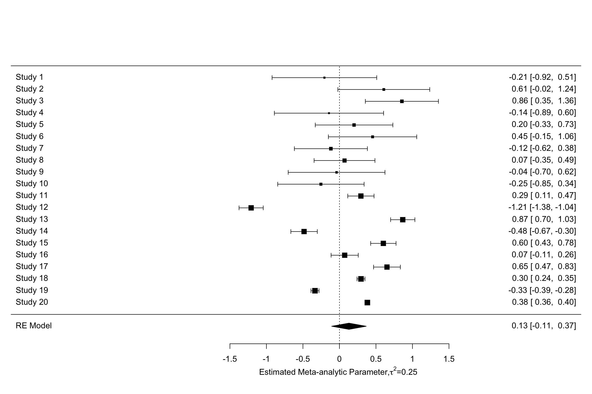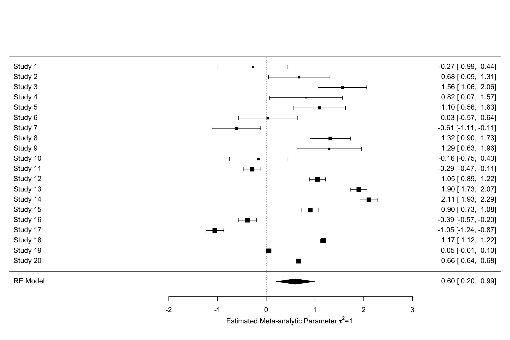
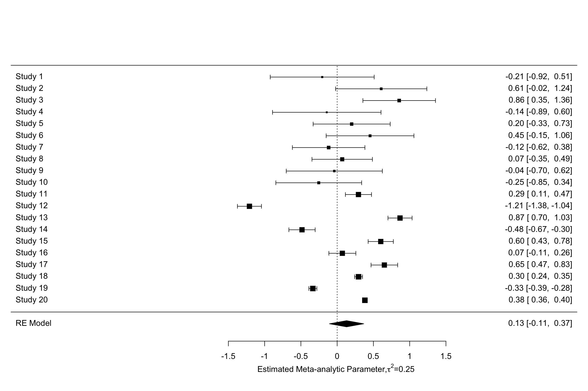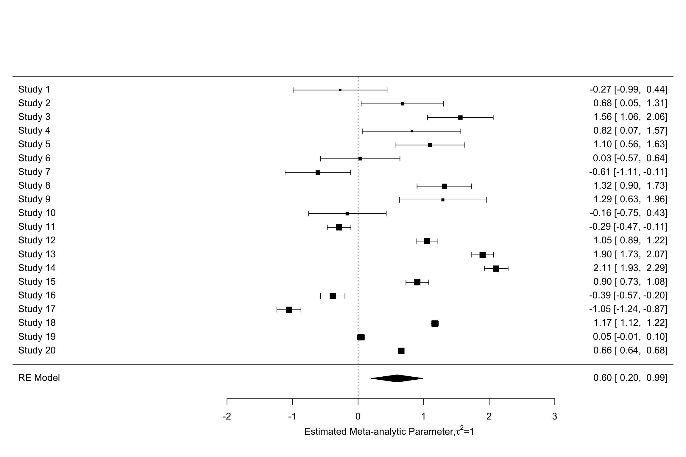
Figure 13.7: Forest plots with random effects
Another very nice and useful graphical presentation device is a radial (or Galbraith) plot. It relates the invserse of the standard errors to the effect sizes normalized by their standard errors. Each data point is also related a radius by the line passing through the origin. The Radial plot enables to visualize the noise in the dataset, and is especially useful when comparing a fixed and a random effects estimator for the same study.
meta.example.FE.theta.1 <- rma(yi = data.meta$theta.1,vi=data.meta$var.ES,method="FE")
radial(meta.example.FE.theta.1)
radial(meta.example.RE.theta.1)Figure 13.8: Radial plots with fixed and random effects \(\tau^2=\) 0.25
Figure 13.8 shows how the mechanics of the fixed effects estimator differs from the mechanics of the random effects one. In the presence of treatment effect heterogeneity, the fixed effect estimator faces two issues:
- It gives too much weight to very precise estimators. The random effects estimator undoes part of this importance by adding \(\tau^2\) to the weights of each observation.
- It overestimates overall precision by ignoring the sampling variance stemming from treatment effect heterogeneity across sites. The random effects estimator corrects for that by estimating \(\tau^2\) and adding it to the estimate of the total variance of the treatment effect.
Let’s plot the two forest plots for the example with \(\tau=\) 0.25.
forest(meta.example.FE.theta.1,slab = paste('Study',data.meta$id,sep=' '),xlab='Estimated Meta-analytic Parameter')
forest(meta.example.RE.theta.1,slab = paste('Study',data.meta$id,sep=' '),xlab='Estimated Meta-analytic Parameter')

Figure 13.9: Fixed vs random effects with \(\tau^2=\) 0.25
Figure 13.9 clearly shows that the inclusion of \(\tau^2\) in the weights and precision estimates makes a huge difference to the meta-analytic estimate. The fixed effects estimator yields an estimate of our treatment effect of 0.3 \(\pm\) 0.02. The random effects estimator yields an estimate of our treatment effect of 0.13 \(\pm\) 0.23. With \(\tau^2=\) 1, the random effects estimator yields an estimate of our treatment effect of 0.6 \(\pm\) 0.39. Remember that the true effect size of our treatment is 0.2. With \(\tau^2=\) 1, the random effects estimator barely contains the truth in its 95 \(\%\) confidence interval.
13.1.5 Meta-regression
A Meta-regression tries to explain the heterogeneity in treatment effects across studies using observed covariates. The idea is to identify characteristics of the studies or of the sites that are correlated with how treatment effects vary.
13.1.5.1 The Meta-regression model
The main equation that we want to estimate is as follows (Raudenbusch, 2009):
\[\begin{align} \hat{\theta}_k & = \mathbf{X}_k \mathbf{\beta} + \epsilon_k + \nu_k, \end{align}\]
Center regressors at the mean?
where \(\mathbf{X}_k\) is a line vector containing the value of the variables suspected to be correlated with treatment effect heterogeneity for study \(k\) and \(\mathbf{\beta}\) is a column vector of the corresponding coefficients, of the same dimension as \(\mathbf{X}_k\). \(\mathbf{X}_k\) contains a \(1\) as its first term, so that \(\beta_0\), the first component of the vector \(\mathbf{\beta}\) measures the effect of the treatment when all other regressors are set to zero. It might thus be a good idea to set the regressors as deviations around their means if we want \(\beta_0\) to capture the average effect of the treatment. The error term \(\epsilon_k\) captures the heterogeneity in estimated effect sizes that is due to sampling noise. The error term \(\nu_k\) captures the heterogeneity in effect sizes across sites that remains after conditioning on \(\mathbf{X}_k\). In addition, it is generally assumed that \(\epsilon_k\sim\mathbf{N}(0,\hat{\sigma}^2_k)\) and \(\nu_k\sim\mathbf{N}(0,\tau^2)\).
This model is in general called the mixed effects linear model. It contains at the same time fixed effects captured by \(\mathbf{X}_k \mathbf{\beta}\) and random effects captured by \(\nu_k\). Setting \(\tau^2\) to zero generates a fixed effects linear model. It is possible, as usual, to test for whether \(\tau^2\) is null or not, which is a test of whether the added covariates fully capture the heterogeneity in treatment effects across studies.
13.1.5.2 Estimating the meta-regression model
There are at least four ways to estimate the meta-regression model:
- Weighted Least squares (WLS): mostly used for fixed effects models, where \(\tau^2\) is assumed to be zero.
- Full Maximum Likelihood Estimator (FMLE)
- Restricted Maximum Likelihood Estimator (RMLE)
- Method Of Moments (MOM)
13.1.5.2.1 Weighted Least Squares
The Weighted Least Squares (WLS) estimator imposes that \(\tau^2=0\). It is thus appropriate when we have a fixed effects linear model. It is also used as a starting point for estimating the other models.
The WLS estimator of \(\mathbf{\beta}\) is written as follows:
\[\begin{align*} \mathbf{\hat{\beta}}_{WLS} & = \left(\sum_{k=1}^N\frac{1}{\hat{\sigma}^2_k}\mathbf{X}_k'\mathbf{X}_k\right)^{-1}\sum_{k=1}^N\frac{1}{\hat{\sigma}^2_k}\mathbf{X}_k'\hat{\theta}_k. \end{align*}\]
The WLS estimator is similar to the standard OLS estimator, except that it gives more weight to mmore precise estimates of the treatment effect. This is a generalization of the weighted average that we have studied in Section 13.1.3.
13.1.5.2.2 Full Maximum Likelihood Estimator
The Full Maximum Likelihood Estimator (FMLE) is also a weighted estimator, but, as the random effects estimator presented in Section 13.1.4.2, it uses as weigths not only the precision estimates (\(\frac{1}{\hat{\sigma}^2_k}\)), but the inverse of the sum of the variance due to sampling noise and the variance due to variation in treatment effects across sites. In order to make all of this clearer, let’s define \(\omega_k = \epsilon_k + \nu_k\), and let’s denote \(\zeta^2_{k}=\hat{\sigma}^2_k+\tau^2\) the variance of \(\omega_k\). The estimatingn equations for the FMLE estimator are:
\[\begin{align*} \mathbf{\hat{\beta}}_{FMLE} & = \left(\sum_{k=1}^N\frac{1}{\hat{\zeta}^2_k}\mathbf{X}_k'\mathbf{X}_k\right)^{-1}\sum_{k=1}^N\frac{1}{\hat{\zeta}^2_k}\mathbf{X}_k'\hat{\theta}_k,\\ \hat{\tau}^2_{FMLE} & = \frac{\sum_{k=1}^N\frac{1}{\hat{\zeta}^4_k}\left((\hat{\theta}_k -\mathbf{X}_k\mathbf{\beta})^2-\hat{\sigma}^2_k\right)}{\sum_{k=1}^N\frac{1}{\hat{\zeta}^4_k}} \end{align*}\]
where \(\hat{\zeta}^2_k\) is an estimate of \(\zeta^2_{k}\). In general, the FEML model is estimated by using a first guess for \(\mathbf{\beta}\), for example \(\mathbf{\hat{\beta}}_{WLS}\). Using this first estimate, we can compute a first estimate of \(\hat{\tau}^2\) and update the set of weights, and iterate until convergence.
13.1.5.2.3 Restricted Maximum Likelihood Estimator
The Restricted Maximum Likelihood Estimator (RMLE) is a weigthed estimator that is very similar to the FMLE estimator, except that the estimation procedure focuses on estimating \(\tau^2\) first. As a consequence, the formula for the \(\tau^2\) estimator is different:
\[\begin{align*} \mathbf{\hat{\beta}}_{RMLE} & = \left(\sum_{k=1}^N\frac{1}{\hat{\zeta}^2_k}\mathbf{X}_k'\mathbf{X}_k\right)^{-1}\sum_{k=1}^N\frac{1}{\hat{\zeta}^2_k}\mathbf{X}_k'\hat{\theta}_k,\\ \hat{\tau}^2_{RMLE} & = \frac{\sum_{k=1}^N\frac{1}{\hat{\zeta}^4_k}\left((\hat{\theta}_k -\mathbf{X}_k\mathbf{\beta})^2-\hat{\sigma}^2_k\right) +\text{tr}\left[\left(\sum_{k=1}^N\frac{1}{\hat{\zeta}^2_k}\mathbf{X}_k'\mathbf{X}_k\right)^{-1}\sum_{k=1}^N\frac{1}{\hat{\zeta}^2_k}\mathbf{X}_k'\mathbf{X}_k\right]} {\sum_{k=1}^N\frac{1}{\hat{\zeta}^4_k}}. \end{align*}\]
Again, this estimator an be computed in a recursive way, starting with an initial guesstimate for the parameters \(\beta\), for example the simple \(WLS\) estimator.
13.1.5.2.4 Method Of Moments (MOM)
The Methods Of Moments estimator (MOM) does not require to assume that the distirbution of \(\nu_k\) is normal. MOM only assumes that the distribution of \(\nu_k\) is i.i.d. with mean zero and variance \(\tau^2\). The MOM estimator is a three-step estimator:
- Estimate \(\beta\) using a simple regression that does require knowing \(\tau^2\).
- Estimate \(\tau^2\) from the residuals of this regression.
- Run a Weighted Least Squares regression including the new estimate of \(\tau^2\) in the weights.
When the first step uses a simple OLS estimator, we have:
\[\begin{align*} \mathbf{\hat{\beta}}_{OLS} & = \left(\sum_{k=1}^N\mathbf{X}_k'\mathbf{X}_k\right)^{-1}\sum_{k=1}^N\mathbf{X}_k'\hat{\theta}_k \\ \hat{\tau}^2_{OLS} & = \frac{RSS-\sum_{k=1}^N\hat{\sigma}^2_k-\text{tr}(S)}{k-p-1}, \end{align*}\]
where \(RSS\) is the Residual Sum of Squares of the OLS regression, \(p\) is the number of covariates and:
\[\begin{align*} S & = \left(\sum_{k=1}^N\mathbf{X}_k'\mathbf{X}_k\right)^{-1}\sum_{k=1}^N\mathbf{X}_k'\mathbf{X}_k. \end{align*}\]
When the first step uses the WLS estimator, we have:
\[\begin{align*} \hat{\tau}^2_{WLS} & = \frac{WRSS-(k-p-1)}{\text{tr}(M)}, \end{align*}\]
where \(WRSS\) is the Residual Sum of Squares of the WLS regression and:
\[\begin{align*} \text{tr}(M) & = \sum_{k=1}^N\frac{1}{\hat{\sigma}^2_k} -\text{tr}\left(\left(\sum_{k=1}^N\frac{1}{\hat{\sigma}^2_k}\mathbf{X}_k'\mathbf{X}_k\right)^{-1}\sum_{k=1}^N\frac{1}{\hat{\sigma}^4_k}\mathbf{X}_k'\mathbf{X}_k\right). \end{align*}\]
13.1.5.3 Estimating sampling noise in the meta-regression model
13.1.5.3.1 Under homoskedasticity
Under homoskedasticity, we’re assuming that the variance of the treatment effect at various sites does not depend on the site characteristics \(\mathbf{X}_k\). In that case, the variance of the estimated coefficients is estimated by:
\[\begin{align*} \hat{\text{Var}}_{Homo}(\hat{\mathbf{\beta}}) & = \left(\sum_{k=1}^N\frac{1}{\hat{\sigma}^2_k+\hat{\tau}^2}\mathbf{X}_k'\mathbf{X}_k\right)^{-1}. \end{align*}\]
13.1.5.3.2 Under heteroskedasticity
Under heteroskedasticity, we allow the variance \(\tau^2\) to depend on \(\mathbf{X}_k\). One correct estimator under that assumption is the Huber-White sandwich estimator:
\[\begin{align*} \hat{\text{Var}}_{HW}(\hat{\mathbf{\beta}}) & = \left(\sum_{k=1}^N\frac{1}{\hat{\sigma}^2_k+\hat{\tau}^2}\mathbf{X}_k'\mathbf{X}_k\right)^{-1} \sum_{k=1}^N\left(\frac{1}{\hat{\sigma}^2_k+\hat{\tau}^2}\right)^2 \mathbf{X}_k'(\hat{\theta}_k-\mathbf{X}_k\hat{\mathbf{\beta}})^2\mathbf{X}_k \left(\sum_{k=1}^N\frac{1}{\hat{\sigma}^2_k+\hat{\tau}^2}\mathbf{X}_k'\mathbf{X}_k\right)^{-1}. \end{align*}\]
# Let me generate the noise as a deviation from the true treatment effect
data.meta$nu.1 <- data.meta$theta.1 - data.meta$ES
data.meta$nu.2 <- data.meta$theta.2 - data.meta$ES
# Let me now run a meta regression
metaReg.example.RE.theta.1.ES <- lapply(estimators,function(method){return(rma(theta.1 ~ nu.1,data=data.meta,vi=data.meta$var.ES,method=method))})
metaReg.example.RE.theta.2.ES <- lapply(estimators,function(method){return(rma(theta.2 ~ nu.2,data=data.meta,vi=data.meta$var.ES,method=method))})
#Let's see what the estimation looks like when we ran an REML regression:
summary(metaReg.example.RE.theta.1.ES[[2]])##
## Mixed-Effects Model (k = 20; tau^2 estimator: REML)
##
## logLik deviance AIC BIC AICc
## 12.3736 -24.7471 -18.7471 -16.0760 -17.0329
##
## tau^2 (estimated amount of residual heterogeneity): 0 (SE = 0.0005)
## tau (square root of estimated tau^2 value): 0
## I^2 (residual heterogeneity / unaccounted variability): 0.00%
## H^2 (unaccounted variability / sampling variability): 1.00
## R^2 (amount of heterogeneity accounted for): 100.00%
##
## Test for Residual Heterogeneity:
## QE(df = 18) = 11.7947, p-val = 0.8577
##
## Test of Moderators (coefficient 2):
## QM(df = 1) = 1009.6599, p-val < .0001
##
## Model Results:
##
## estimate se zval pval ci.lb ci.ub
## intrcpt 0.1981 0.0085 23.1790 <.0001 0.1813 0.2148 ***
## nu.1 0.9708 0.0306 31.7751 <.0001 0.9109 1.0307 ***
##
## ---
## Signif. codes: 0 '***' 0.001 '**' 0.01 '*' 0.05 '.' 0.1 ' ' 1We can see that the estimated coefficient for the noise is large and almost equal to one, that the estimation of residual inter-site variance becomes zero and that the precision of our estimared treatment effect becomes much greater (since all variance due to site effects has been absorbed by the regressor).
Let’s now look at the estimated coefficients.
For that, we are going to use the function coef(summary()) that extracts a dataframe of the coefficients along with their standard errors.
list.coef.tot.1 <- lapply(metaReg.example.RE.theta.1.ES,function(res){return(coef(summary(res)))})
list.coef.tot.2 <- lapply(metaReg.example.RE.theta.2.ES,function(res){return(coef(summary(res)))})
list.coef.1 <- unlist(lapply(list.coef.tot.1,'[[',c(1,1)))
list.se.1 <- unlist(lapply(list.coef.tot.1,'[[',c(2,1)))
list.coef.2 <- unlist(lapply(list.coef.tot.2,'[[',c(1,1)))
list.se.2 <- unlist(lapply(list.coef.tot.2,'[[',c(2,1)))
result.Meta <- data.frame(Method=rep(estimators,2),ES.Meta=c(list.coef.1,list.coef.2),se.ES=c(list.se.1,list.se.2),tau2=c(rep(tau[[1]]^2,length(estimators)),rep(tau[[2]]^2,length(estimators))))
ggplot(data=result.Meta, aes(x=Method, y=ES.Meta, group=as.factor(tau2), color=as.factor(tau2))) +
geom_point(stat="identity", position=position_dodge(0.7))+
geom_errorbar(aes(min=ES.Meta-qnorm((1+delta.2)/2)*se.ES,max=ES.Meta+qnorm((1+delta.2)/2)*se.ES),position=position_dodge(0.7),width=0.1)+
geom_hline(aes(yintercept=ES(param)), colour="#990000", linetype="dashed")+
expand_limits(y=0)
Figure 13.10: Various estimators of Effect Size in a Meta-Regression
Figure 13.10 shows that all estimators perform very well and deliver a precise estimate of the true effect.
I think SJn is the MOM estimator, check that.
13.1.6 Constantly updated meta-analysis
Constantly updated meta-analysis performs the meta-analysis in a progressive manner, as the results keep arriving. This is a very important tool that enables us to aggregate constantly the information coming from different studies. Moreover, restrospectively, it helps us to assess when we would have reached enough precision so that we could have foregone an additional study. The way constantly updated meta-analysis works is simply by performing a new meta-analysis each time a new results pops up.
cum.wmae.1 <- function(k,theta,sigma2){
return(c(weighted.mean(theta[1:k],(1/sigma2[1:k])/(sum(1/sigma2[1:k]))),1/sum(1/sigma2[1:k])))
}
cum.wmae <- function(theta,sigma2){
return(sapply(1:length(theta),cum.wmae.1,theta=theta,sigma2=sigma2))
}
cum.test <- as.data.frame(t(cum.wmae(data.meta$ES,data.meta$se.ES^2)))
colnames(cum.test) <- c('cum.ES','cum.var')
cum.test$id <- 1:nrow(cum.test)
cum.test$cum.se.ES <- sqrt(cum.test$cum.var)
ggplot(data.meta, aes(x=forcats::fct_rev(as.factor(id)), y=ES)) +
geom_bar(position=position_dodge(), stat="identity", colour='black') +
geom_errorbar(aes(ymin=ES-qnorm((delta.2+1)/2)*se.ES, ymax=ES+qnorm((delta.2+1)/2)*se.ES), width=.2,position=position_dodge(.9),color='blue') +
geom_hline(aes(yintercept=ES(param)), colour="#990000", linetype="dashed")+
xlab("Studies")+
ylab("Initial effect size")+
theme_bw()+
coord_flip()
ggplot(cum.test, aes(x=forcats::fct_rev(as.factor(id)), y=cum.ES)) +
geom_bar(position=position_dodge(), stat="identity", colour='black') +
geom_errorbar(aes(ymin=cum.ES-qnorm((delta.2+1)/2)*cum.se.ES, ymax=cum.ES+qnorm((delta.2+1)/2)*cum.se.ES), width=.2,position=position_dodge(.9),color='blue') +
geom_hline(aes(yintercept=ES(param)), colour="#990000", linetype="dashed")+
xlab("Studies")+
ylab("Cumulative effect size")+
theme_bw()+
coord_flip() 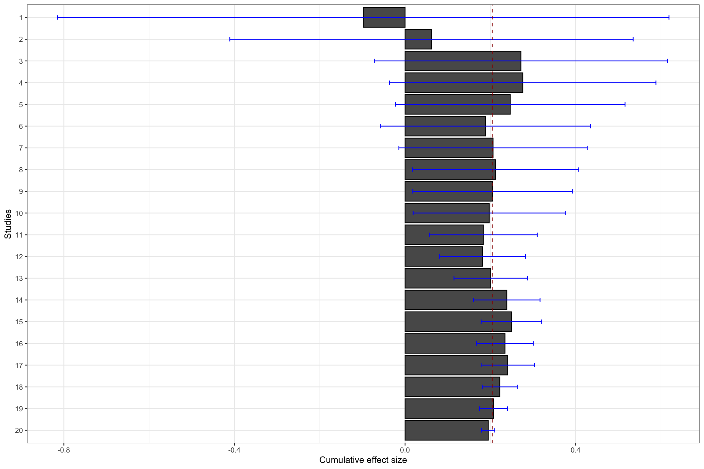
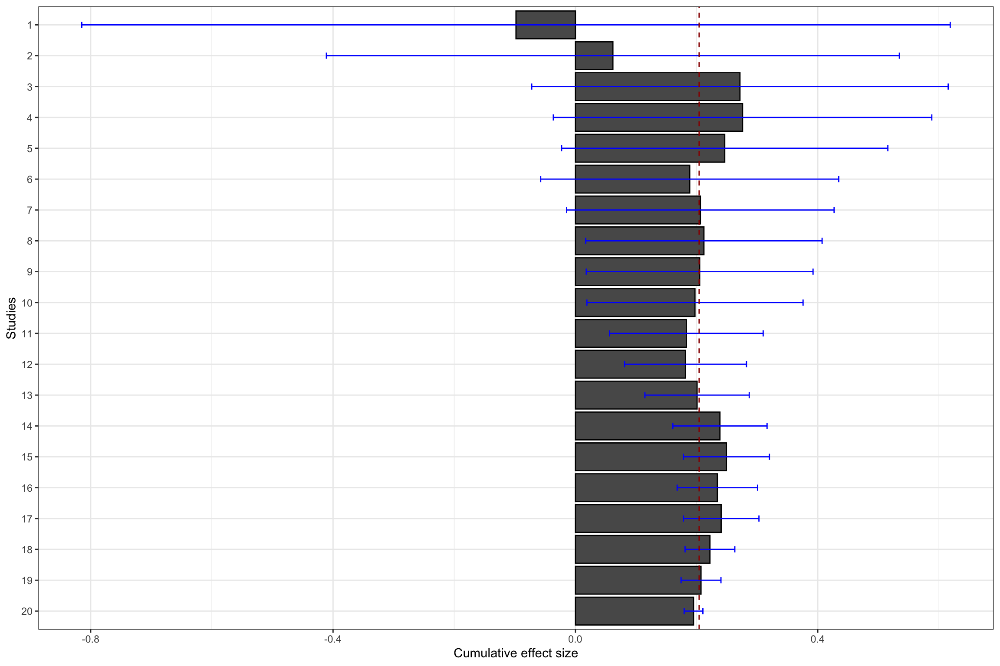
Figure 13.11: Constantly updated meta-analysis
Figure 13.11 shows that combining several imprecise estimates might help you reach the same precision as running a larger experiment.
For instance, cumulating the first 10 studies with a small sample size (\(N=\) 100), the meta-analytic effect is estimated at 0.2 \(\pm\) 0.18.
This is very close to the individual estimate obtained from the first estimate with a larger sample size (sample 11 on Figure 13.11, with \(N=\) 1000): 0.17 \(\pm\) 0.18.
Both estimates actually have the exact same precision (because they actually have the same sample size).
The same is true when combining the first 17 studies.
The meta-analytic effect is estimated at 0.24 \(\pm\) 0.06, while the effect estimated using one unique RCT with a larger sample size (sample 18 on Figure 13.11, with \(N=\) 10^{4}) is 0.21 \(\pm\) 0.05.
Finally, the same result occurs when combining the first 19 studies.
The meta-analytic effect is estimated at 0.21 \(\pm\) 0.03, while the effect estimated using one unique RCT with a larger sample size (sample 20 on Figure 13.11, with \(N=\) 10^{5}) is 0.19 \(\pm\) 0.02.
As a conclusion, constantly updated meta-analysis would have each time delivered the same result than the one found with a much larger study, rendering this additional study almost irrelevant. This is a very important result: beyond the apparent messiness of the first noisy estimates in Figures 13.1 and 13.3 lies an order that can be retrieved and made apparent using constantly updated meta-analysis. Sometimes, the answer is right there in front of our eyes, we just lack the ability to see it. Constantly updated meta-analysis serves as a binocular to magnify what is there. Think about how costly it woud be to run a very large study, just to find out that the we did not really need it because we had known the result all along.
metafor package with much less lines of code.
forest(meta.example.FE,slab = paste('Study',data.meta$id,sep=' '),xlab='Estimated Meta-analytic Parameter')
cumul.meta.example.FE <- cumul(meta.example.FE, order=data.meta$id)
forest(cumul.meta.example.FE,slab = paste('Study',data.meta$id,sep=' '),xlab='Estimated Meta-analytic Cumulated Parameter')
Figure 13.12: Constantly updated meta-analysis with the metafor package
You can also call each of the individual results of the cumulative meta-analysis using cumul.meta.example.FE$estimate.
For example, the cumulated effect size after the 10 first studies is equal to 0.2 \(\pm\) 0.18.
13.2 Publication bias and site selection bias
Up to now, we have made the assumption that a meta-analysis can access the results of ALL of the studies conducted on a topic. Problems appear when the publisehd record does not contain ALL of the studies conducted on a topic, but only a non-representative sample of them.
In the first section below, I detail the two main types of biases: publication bias and site selection bias. In the second section, I present methods that help to detect and correct for publication bias. In the third section, I present methods tha help to detect and correct for site selection bias. In the last section, I take a step back and ask whether publication bias can be somehow optimal.
13.2.1 Sources of publication bias and of site selection bias and Questionable Research Practices
This section explains the sources of publication bias and site selection bias. I also expalin how they trigger the use of Questionable Research Practices that bias the published record even more.
13.2.1.1 Publication bias
There is publication bias when the eventual publication of the results of a research project depends on the results themselves. In general, the probability that a result is published increases drastically when the results reach the usual levels of statistical significance. On the contrary, the probability that a non significant result is published decreases drastically.
Give evidence of that behavior.
The reasons for this behavior are pretty well understood: editors and referees consider that only statistically significant results are of scientific interest, and that non significant results bring close to no information on a topic, especially if they are imprecise. Knowing this, most researchers choose not to invest time in trying to send a paper with a non significant result for publication.
What are the consequences of publishing only statistically significant results? Well, among imprecisely estimated effects, only the largest ones are going to reach publication, generating a pattern of overestimation of the true treatment effect. They key trade-off is whether the resulting bias is very large or not.
meta.example.FE.pubbias <- rma(yi = data.meta$ES[abs(data.meta$ES/sqrt(data.meta$var.ES))>=qnorm((1+delta.2)/2)],vi=data.meta$var.ES[abs(data.meta$ES/sqrt(data.meta$var.ES))>qnorm((1+delta.2)/2)],method="FE")
meta.example.FE.small <- rma(yi = filter(data.meta,id<=10)$ES,vi=filter(data.meta,id<=10)$var.ES,method="FE")
meta.example.FE.small.pubbias <- rma(yi = filter(data.meta,id<=10)$ES[abs(data.meta$ES/sqrt(data.meta$var.ES))>=qnorm((1+delta.2)/2)],vi=filter(data.meta,id<=10)$var.ES[abs(data.meta$ES/sqrt(data.meta$var.ES))>qnorm((1+delta.2)/2)],method="FE")
meta.example.FE.interm <- rma(yi = filter(data.meta,id<=17)$ES,vi=filter(data.meta,id<=17)$var.ES,method="FE")
meta.example.FE.interm.pubbias <- rma(yi = filter(data.meta,id<=17)$ES[abs(data.meta$ES/sqrt(data.meta$var.ES))>=qnorm((1+delta.2)/2)],vi=filter(data.meta,id<=17)$var.ES[abs(data.meta$ES/sqrt(data.meta$var.ES))>qnorm((1+delta.2)/2)],method="FE")
ggplot(filter(data.meta,id<=10), aes(x=as.factor(id), y=ES)) +
geom_point(position=position_dodge(), stat="identity", colour='blue') +
geom_errorbar(aes(ymin=ES-qnorm((delta.2+1)/2)*se.ES, ymax=ES+qnorm((delta.2+1)/2)*se.ES), width=.2,position=position_dodge(.9),color='blue') +
geom_hline(aes(yintercept=ES(param)), colour="#990000", linetype="dashed")+
geom_hline(aes(yintercept=coef(meta.example.FE.small)), colour="#990000", linetype="dotted")+
geom_hline(aes(yintercept=coef(meta.example.FE.small.pubbias)), colour="green", linetype="dotted")+
xlab("Studies (only small sample size)")+
ylab("Effect size")+
theme_bw()
ggplot(filter(data.meta,id<=17), aes(x=as.factor(id), y=ES)) +
geom_point(position=position_dodge(), stat="identity", colour='blue') +
geom_errorbar(aes(ymin=ES-qnorm((delta.2+1)/2)*se.ES, ymax=ES+qnorm((delta.2+1)/2)*se.ES), width=.2,position=position_dodge(.9),color='blue') +
geom_hline(aes(yintercept=ES(param)), colour="#990000", linetype="dashed")+
geom_hline(aes(yintercept=coef(meta.example.FE.interm)), colour="#990000", linetype="dotted")+
geom_hline(aes(yintercept=coef(meta.example.FE.interm.pubbias)), colour="green", linetype="dotted")+
xlab("Studies (only small and intermediate sample size)")+
ylab("Effect size")+
theme_bw()
ggplot(data.meta, aes(x=as.factor(id), y=ES)) +
geom_point(position=position_dodge(), stat="identity", colour='blue') +
geom_errorbar(aes(ymin=ES-qnorm((delta.2+1)/2)*se.ES, ymax=ES+qnorm((delta.2+1)/2)*se.ES), width=.2,position=position_dodge(.9),color='blue') +
geom_hline(aes(yintercept=ES(param)), colour="#990000", linetype="dashed")+
geom_hline(aes(yintercept=coef(meta.example.FE)), colour="#990000", linetype="dotted")+
geom_hline(aes(yintercept=coef(meta.example.FE.pubbias)), colour="green", linetype="dotted")+
xlab("Studies (all)")+
ylab("Effect size")+
theme_bw()
 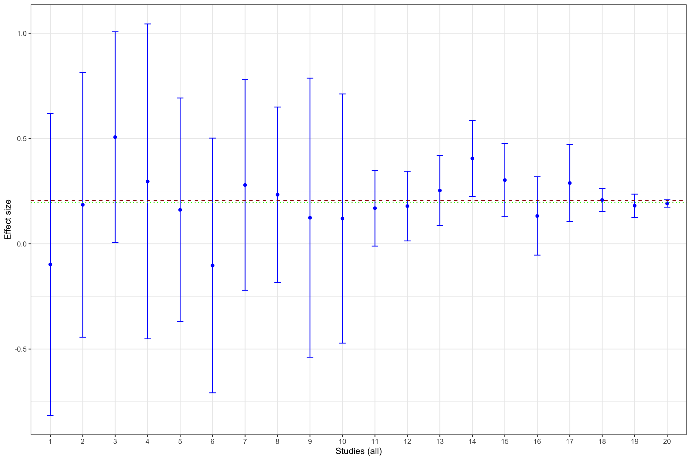
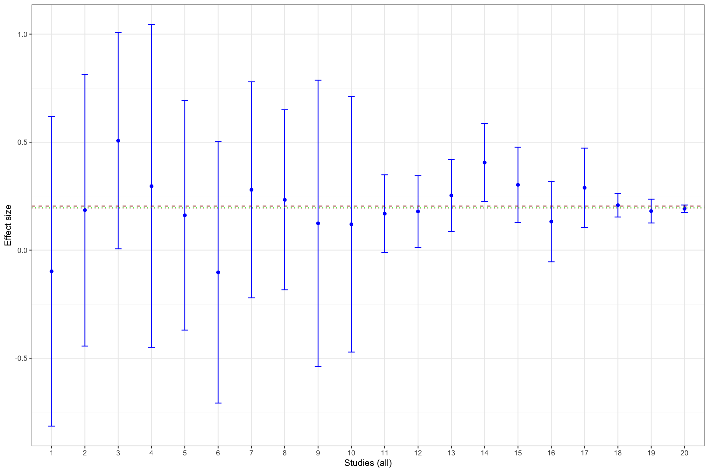
Figure 13.13: Illustration of publication bias
Figure 13.13 shows that publication bias can be a sizable problem. Remember that the true effect that we are trying to estimate is 0.2. When only imprecise studies with small sample size are available, the effect estimated using only the statistically significant studies (actually, the only study that reports a statistically significant result) is equal to 0.51 \(\pm\) 0.5, while the effect estimated all the 10 studies with a small sample size is 0.2 \(\pm\) 0.18. When studies with small and intermediate sample size are available, the effect estimated using only the statistically significant studies is equal to 0.29 \(\pm\) 0.08, while the effect estimated all the 17 studies with a small and intermediate sample size is 0.24 \(\pm\) 0.06. It is only when studies with large and very large sample size are added to the estimation that publication bias is not a problem anymore. The effect estimated using only the statistically significant studies is equal to 0.2 \(\pm\) 0.02, while the effect estimated all the studies is 0.19 \(\pm\) 0.02.
As a conclusion of Figure 13.13, publication bias biases the true effect by:
- 148 %, or 0.3 of a standard deviation, with studies with a small sample size,
- 40 %, or 0.08 of a standard deviation, with studies with a small or intermediate sample size,
- 4 %, or 0.01 of a standard deviation, with all studies.
With random effects, this behavior becomes even more severe, since only the sites at which the program has worked are going to appear in the published record, thereby biasing downards the true heterogeneity in treatment effects.
meta.example.RE <- rma(yi = data.meta$theta.1,vi=data.meta$var.ES,method="REML")
meta.example.RE.pubbias <- rma(yi = data.meta$theta.1[abs(data.meta$theta.1/sqrt(data.meta$var.ES))>=qnorm((1+delta.2)/2)],vi=data.meta$var.ES[abs(data.meta$theta.1/sqrt(data.meta$var.ES))>qnorm((1+delta.2)/2)],method="REML")
meta.example.RE.small <- rma(yi = filter(data.meta,id<=10)$theta.1,vi=filter(data.meta,id<=10)$var.ES,method="REML")
meta.example.RE.small.pubbias <- rma(yi = filter(data.meta,id<=10)$theta.1[abs(data.meta$theta.1/sqrt(data.meta$var.ES))>=qnorm((1+delta.2)/2)],vi=filter(data.meta,id<=10)$var.ES[abs(data.meta$theta.1/sqrt(data.meta$var.ES))>qnorm((1+delta.2)/2)],method="REML")
meta.example.RE.interm <- rma(yi = filter(data.meta,id<=17)$theta.1,vi=filter(data.meta,id<=17)$var.ES,method="REML")
meta.example.RE.interm.pubbias <- rma(yi = filter(data.meta,id<=17)$theta.1[abs(data.meta$theta.1/sqrt(data.meta$var.ES))>=qnorm((1+delta.2)/2)],vi=filter(data.meta,id<=17)$var.ES[abs(data.meta$theta.1/sqrt(data.meta$var.ES))>qnorm((1+delta.2)/2)],method="REML")
ggplot(filter(data.meta,id<=10), aes(x=as.factor(id), y=theta.1)) +
geom_point(position=position_dodge(), stat="identity", colour='blue') +
geom_errorbar(aes(ymin=theta.1-qnorm((delta.2+1)/2)*se.ES, ymax=theta.1+qnorm((delta.2+1)/2)*se.ES), width=.2,position=position_dodge(.9),color='blue') +
geom_hline(aes(yintercept=ES(param)), colour="#990000", linetype="dashed")+
geom_hline(aes(yintercept=coef(meta.example.RE.small)), colour="#990000", linetype="dotted")+
geom_hline(aes(yintercept=coef(meta.example.RE.small.pubbias)), colour="green", linetype="dotted")+
xlab("Studies (only small sample size)")+
ylab("Effect size")+
theme_bw()
ggplot(filter(data.meta,id<=17), aes(x=as.factor(id), y=theta.1)) +
geom_point(position=position_dodge(), stat="identity", colour='blue') +
geom_errorbar(aes(ymin=theta.1-qnorm((delta.2+1)/2)*se.ES, ymax=theta.1+qnorm((delta.2+1)/2)*se.ES), width=.2,position=position_dodge(.9),color='blue') +
geom_hline(aes(yintercept=ES(param)), colour="#990000", linetype="dashed")+
geom_hline(aes(yintercept=coef(meta.example.RE.interm)), colour="#990000", linetype="dotted")+
geom_hline(aes(yintercept=coef(meta.example.RE.interm.pubbias)), colour="green", linetype="dotted")+
xlab("Studies (only small and intermediate sample size)")+
ylab("Effect size")+
theme_bw()
ggplot(data.meta, aes(x=as.factor(id), y=theta.1)) +
geom_point(position=position_dodge(), stat="identity", colour='blue') +
geom_errorbar(aes(ymin=theta.1-qnorm((delta.2+1)/2)*se.ES, ymax=theta.1+qnorm((delta.2+1)/2)*se.ES), width=.2,position=position_dodge(.9),color='blue') +
geom_hline(aes(yintercept=ES(param)), colour="#990000", linetype="dashed")+
geom_hline(aes(yintercept=coef(meta.example.RE)), colour="#990000", linetype="dotted")+
geom_hline(aes(yintercept=coef(meta.example.RE.pubbias)), colour="green", linetype="dotted")+
xlab("Studies (all)")+
ylab("Effect size")+
theme_bw()Figure 13.14: Illustration of publication bias with Random Effects
Figure 13.14 shows that publication bias can be a sizable problem with random effects as well. Remember that the true effect that we are trying to estimate is 0.2. When only imprecise studies with small sample size are available, the effect estimated using only the statistically significant studies is equal to 0.64 \(\pm\) 0.29, while the effect estimated all the 10 studies with a small sample size is 0.17 \(\pm\) 0.27. When studies with small and intermediate sample size are available, the effect estimated using only the statistically significant studies is equal to 0.26 \(\pm\) 0.39, while the effect estimated all the 17 studies with a small and intermediate sample size is 0.14 \(\pm\) 0.27. It is only when studies with large and very large sample size are added to the estimation that publication bias is not a problem anymore. The effect estimated using only the statisticaly significant studies is equal to 0.22 \(\pm\) 0.31, while the effect estimated all the studies is 0.13 \(\pm\) 0.23.
As a conclusion of Figure 13.13, publication bias biases the true effect by:
- 212 %, or 0.43 of a standard deviation, with studies with a small sample size,
- 25 %, or 0.05 of a standard deviation, with studies with a small or intermediate sample size,
- 7 %, or 0.01 of a standard deviation, with all studies.
13.2.1.2 Site selection bias
There is site selection bias when researchers only implement an intervention in sites where they expect it to work. How can they do so? There are several informations that one can use to select sites for implementing a treatment and maximizing its effectiveness. First, researchers might only be able to work with highly motivated implementation agents. This might generate larger effects of the treatment. Second, researchers might have an informal knowledge on the types of individuals who react to the treatment well, and might decide to include them preferentially in the experimental study. Third, researchers might try out several different treatments in small informal pilots, and choose to run at scale only the most effective one(s). Finally, researchers, by conducting an extensive diagnosis of the problem that they face on the ground, might end up selecting a treatment that is more appropriate than a randomly selected treatment.
What are the consequences of site selection bias? If the selection process remains undocumented, a policy-maker trying to implement a treatment with a proven track record might fail to obtain the expected results because the site on which she decides to implement it is not representative of the distribution of sites in which the program has been evaluated. Ommitting to detail the process of site selection is akin to not explaining the recommendations of use, or worse the diagnosis of the disease, for a drug. If we do not know which disease the drug is effective against, we might end up expecting great results of a cold medecine against cancer.
Simulations.
13.2.1.3 Questionable Research Practices
Publication bias triggers and is aggravated by the use of Questionable Research Practices (QRPs). QRPs enable researchers (sometimes unknowingly) to obtain more statistically significant results than should be the case in view of the true effect of the treatment that they are looking at and the power of their test. Normally, when a treatment has no effect, only 5% of the treatment effects are going to turn out positive and significant when using a standard two-sided t-test. But, with QRPs, this figure can increase to 10, 20 or even, 50% in some cases.
References.
What are the most usual QRPs?
- Choosing a sample that generates significant effects: that includes stopping data collection when an effet of interest is found or deciding on critera of inclusion of observations based on statistical singificance. Sometimes, simply stopping to do robustness checks when results are significant is enough to bias usual tests of statistical significance.
- Choosing an outcome because the effect of the treatment is statistically significant. If we test a treatment on 100 outcomes for which the true effect of the treatment is null, between 2 and 3 outcomes are expected to turn out with positive effects just by the sheer property of the tests that we are using.
- Choosing an identification strategy that generates significant treatment effects. Researcher smight try out various instruments and various natural experiments before settling down on the one that yields a statistically significant result.
- Choosing a subgroup for which significant effects are obtained. Analysis by subgroups offers a lot of opportunities for finding spurious significant effects.
The key question is whether these QRPs only move borderline significant results into the realm of significance, and thus have small effects of the size of the treatment effect, or if they enable to transform small effects into much larger ones. Note though that even if the QRPs only transform barely non-significant results in barely significant ones, the sheer repetition of these results in a meta-analysis is going to overestimate precision and might yield eventually to a confidence interval that does not contain the true effect, maybe by a large margin.
Simulations.
13.2.2 Detection of and correction for publication bias
Over the years, researchers have become aware of the problem that publication bias raises for meta-analyses and they have developed methods to detect and correct for it.
13.2.2.1 Funnel plot asymmetry
The first tool to identify the extent of publication bias is the funnel plot. The funnel plot plots the effect size as a function of its precision (or standard error). In the absence of publication bias, results should be distributed symetrically around the mean treatment effect estimate. We say that in this case the funnel plot is symmetric. In the presence of publication bias, results that are not statistically significant will be missing. They will be concentrated on the lower left part of the plot, were standard errors are large and estimated effects small. Missing results generate an asymetric funnel plot.
funnel(meta.example.FE.interm,xlab='Effect size (without publication bias)',xlim=c(-0.5,1),ylim=c(0.382,0),refline=0)
abline(v=ES(param),col="red")
abline(v=coef(meta.example.FE.interm),col="blue")
funnel(meta.example.FE.interm.pubbias,xlab='Effect size (with publication bias)',xlim=c(-0.5,1),ylim=c(0.382,0),refline=0)
abline(v=ES(param),col="red")
abline(v=coef(meta.example.FE.interm.pubbias),col="green")Figure 13.15: Funnel plot with and without publication bias (homogeneous treatment effects, small and intermediate precision)
Figure 13.15 shows how a funnel plot works. The x-axis presents the effect size of each study (here, in the homogeneous treatment effect case, analyzed using fixed effects). The y-axis presents the standard error, in an inverted scale, so that the most precise studies appear at the top of the graph. The two diagonal lines stemming out of zero present the 95% confidence intervals arounf zero, a.k.a. the two sided tests of statistical significance. In the plot, we focus of studies with small to intermediate precision. In our example, very precise studies are so much more precise that they make the problem of publication bias vanish.
When there is no publication bias, the funnel plot does not seem to exhibit asymmetry: there are as many imprecise studies on the left and on the right of the average effect. When there is publication bias, all the studies that fall within the confidence interval compatible with a zero treatment effect disappear. As a consequence, the remaining treatment effects are inflated versions of the truth. Moreover, we see that there is an increasing relationship between standard error and effect size. This is a sign of funnel plot asymmetry.
For the sake of completeness, Figure 13.16 shows what the funnel plot looks like with heterogeneous treatment effects analyzed using a random effects approach.
funnel(meta.example.RE.interm,xlab='Effect size (without publication bias)',xlim=c(-1,1),ylim=c(0.382,0),refline=0)
abline(v=ES(param),col="red")
abline(v=coef(meta.example.RE.interm),col="blue")
funnel(meta.example.RE.interm.pubbias,xlab='Effect size (with publication bias)',xlim=c(-1,1),ylim=c(0.382,0),refline=0)
abline(v=ES(param),col="red")
abline(v=coef(meta.example.RE.interm.pubbias),col="green")Figure 13.16: Funnel plot with and without publication bias (heterogeneous treatment effects, small and intermediate precision)
How do we implement these intuitions rigorously? The next section present the tools developed to do just that.
13.2.2.2 FAT-PET-PEESE
Docouliagos and Stanley (2012) have developed a method based on funnel plot asymmetry to detect publication bias and correct for it. Their approach is based on three steps:
- The Funnel Asymmetry Test (FAT) that tests whether there is a relationship between effect sizes and their precision.
- The Precision-Effect Test (PET) that estimates the effect corrected for publication bias and tests for its existence.
- The Precision-Effect Estimate with Standard Error (PEESE) that estimates the effect corrected for publication bias using a non-linear model for the standard error. When there is a genuine effect, PEESE offers a less biased estimate than PET.
The authors suggest to implement these procedures in a sequence, starting with the existence of publication bias, evidence for the existence of a non-zero effect once publication bias is accounted for and then estimate the bias-corrected effect when it is detected to be non-zero. Let’s examine these approaches in turn.
The FAT and the PET are based on the following meta-regression:
\[\begin{align*} \hat{\theta}_k & = \alpha_0 + \alpha_1\hat{\sigma}_k + \epsilon_k + \nu_k, \end{align*}\]
The PEESE is based on the following meta-regression:
\[\begin{align*} \hat{\theta}_k & = \beta_0 + \beta_1\hat{\sigma}^2_k + \epsilon_k + \nu_k, \end{align*}\]
Whether we assume that \(\tau^2\), the variance of \(\nu_k\) is zero or not makes the FAT model a fixed or a random effects model. We run this regression with either Weighted Least Squares (in the fixed effects model) or with one of the methods appropriate for random effects (I’m going to use REML in what follows).
The FAT tests the assumption that \(\alpha_1=0\) using a standard two-sided t-test. Rejecting the null means that there is sign of publication bias. The PET tests whether \(\alpha_0=0\). Rejecting the null means that there is evidence of a true effect. The PEESE estimates the bias-corrected effect size by using \(\hat{\beta}_1\).
I’m focusing on the case with only small and intermediate precision estimates, as in the funnel plots in Figure 13.15.
FAT.PET.FE.interm <- rma(ES ~ sqrt(var.ES), data= filter(data.meta,id<=17),vi=filter(data.meta,id<=17)$var.ES,method="FE")
FAT.PET.FE.interm.pubbias <- rma(ES ~ sqrt(var.ES), data = filter(data.meta,id<=17,abs(data.meta$ES/sqrt(data.meta$var.ES))>=qnorm((1+delta.2)/2)),vi=filter(data.meta,id<=17,abs(data.meta$ES/sqrt(data.meta$var.ES))>=qnorm((1+delta.2)/2))$var.ES,method="FE")
PEESE.FE.interm <- rma(ES ~ var.ES, data= filter(data.meta,id<=17),vi=filter(data.meta,id<=17)$var.ES,method="FE")
PEESE.FE.interm.pubbias <- rma(ES ~ var.ES, data = filter(data.meta,id<=17,abs(data.meta$ES/sqrt(data.meta$var.ES))>=qnorm((1+delta.2)/2)),vi=filter(data.meta,id<=17,abs(data.meta$ES/sqrt(data.meta$var.ES))>=qnorm((1+delta.2)/2))$var.ES,method="FE")
summary(FAT.PET.FE.interm)##
## Fixed-Effects with Moderators Model (k = 17)
##
## logLik deviance AIC BIC AICc
## 8.6124 9.5293 -13.2247 -11.5583 -12.3676
##
## I^2 (residual heterogeneity / unaccounted variability): 0.00%
## H^2 (unaccounted variability / sampling variability): 0.64
##
## Test for Residual Heterogeneity:
## QE(df = 15) = 9.5293, p-val = 0.8483
##
## Test of Moderators (coefficient 2):
## QM(df = 1) = 0.4952, p-val = 0.4816
##
## Model Results:
##
## estimate se zval pval ci.lb ci.ub
## intrcpt 0.2791 0.0634 4.4053 <.0001 0.1549 0.4033 ***
## sqrt(var.ES) -0.3397 0.4828 -0.7037 0.4816 -1.2861 0.6066
##
## ---
## Signif. codes: 0 '***' 0.001 '**' 0.01 '*' 0.05 '.' 0.1 ' ' 1summary(FAT.PET.FE.interm.pubbias)##
## Fixed-Effects with Moderators Model (k = 6)
##
## logLik deviance AIC BIC AICc
## 6.4279 3.0645 -8.8557 -9.2722 -4.8557
##
## I^2 (residual heterogeneity / unaccounted variability): 0.00%
## H^2 (unaccounted variability / sampling variability): 0.77
##
## Test for Residual Heterogeneity:
## QE(df = 4) = 3.0645, p-val = 0.5471
##
## Test of Moderators (coefficient 2):
## QM(df = 1) = 1.1380, p-val = 0.2861
##
## Model Results:
##
## estimate se zval pval ci.lb ci.ub
## intrcpt 0.1352 0.1470 0.9195 0.3578 -0.1530 0.4233
## sqrt(var.ES) 1.6351 1.5327 1.0668 0.2861 -1.3691 4.6392
##
## ---
## Signif. codes: 0 '***' 0.001 '**' 0.01 '*' 0.05 '.' 0.1 ' ' 1summary(PEESE.FE.interm)##
## Fixed-Effects with Moderators Model (k = 17)
##
## logLik deviance AIC BIC AICc
## 8.6741 9.4058 -13.3483 -11.6818 -12.4911
##
## I^2 (residual heterogeneity / unaccounted variability): 0.00%
## H^2 (unaccounted variability / sampling variability): 0.63
##
## Test for Residual Heterogeneity:
## QE(df = 15) = 9.4058, p-val = 0.8554
##
## Test of Moderators (coefficient 2):
## QM(df = 1) = 0.6187, p-val = 0.4315
##
## Model Results:
##
## estimate se zval pval ci.lb ci.ub
## intrcpt 0.2568 0.0379 6.7699 <.0001 0.1825 0.3312 ***
## var.ES -0.9426 1.1983 -0.7866 0.4315 -3.2912 1.4061
##
## ---
## Signif. codes: 0 '***' 0.001 '**' 0.01 '*' 0.05 '.' 0.1 ' ' 1summary(PEESE.FE.interm.pubbias)##
## Fixed-Effects with Moderators Model (k = 6)
##
## logLik deviance AIC BIC AICc
## 6.3347 3.2508 -8.6694 -9.0859 -4.6694
##
## I^2 (residual heterogeneity / unaccounted variability): 0.00%
## H^2 (unaccounted variability / sampling variability): 0.81
##
## Test for Residual Heterogeneity:
## QE(df = 4) = 3.2508, p-val = 0.5168
##
## Test of Moderators (coefficient 2):
## QM(df = 1) = 0.9516, p-val = 0.3293
##
## Model Results:
##
## estimate se zval pval ci.lb ci.ub
## intrcpt 0.2460 0.0569 4.3210 <.0001 0.1344 0.3576 ***
## var.ES 4.3828 4.4928 0.9755 0.3293 -4.4229 13.1885
##
## ---
## Signif. codes: 0 '***' 0.001 '**' 0.01 '*' 0.05 '.' 0.1 ' ' 1The results of the analysis are as expected, even though the small sample size prevents us from drawing conclusive results. When running the regression on the whole sample, in the absence of publication bias, we find that the estimated coefficient for the standard error in the meta-analytic regression is -0.34 \(\pm\) 0.95. As a consequence, the FAT detects no sign of publication bias, with a pretty decent precision level. When running the regression on the sample with publication bias, we find that the estimated coefficient for the standard error in the meta-analytic regression is 1.64 \(\pm\) 3. The coefficient is positive, as expected if larger results occur with smaller sample size, but the precision of this coefficient is too low for the FAT to be able to detect publication bias. This is a characteristic of the FAT to have low power, especially in our case where only one observation with small sample size drives all the results.
In the absence of publication bias, the PET detects a positive effect (0.28 \(\pm\) 0.12) that is significantly different from zero, which is a sign of existence of a true effect. The PEESE is of 0.26 \(\pm\) 0.07 . Following the practice suggested by Docouliagos and Stanley, we should refrain from using these estimates and focus only on the simple meta-analytic one (0.24 \(\pm\) 0.06), since the FAT has not detected signs of publication bias. In the presence of publication bias, the PET does not detect a positive effect (0.14 \(\pm\) 0.29). The PEESE is of 0.25 \(\pm\) 0.11 . Again, following the practice suggested by Docouliagos and Stanley, we should refrain from using these estimates and focus only on the simple meta-analytic one (0.29 \(\pm\) 0.08), since the FAT has not detected signs of publication bias. Note nevertheless that in both cases the PEESE is almost as good as the meta-analytic estimate.
Let’s now look at what happens when we are in a random effects world.
FAT.PET.RE.interm <- rma(theta.1 ~ sqrt(var.ES), data= filter(data.meta,id<=17),vi=filter(data.meta,id<=17)$var.ES,method="REML")
FAT.PET.RE.interm.pubbias <- rma(theta.1 ~ sqrt(var.ES), data = filter(data.meta,id<=17,abs(data.meta$theta.1/sqrt(data.meta$var.ES))>=qnorm((1+delta.2)/2)),vi=filter(data.meta,id<=17,abs(data.meta$theta.1/sqrt(data.meta$var.ES))>=qnorm((1+delta.2)/2))$var.ES,method="REML")
FAT.PET.RE.interm.pubbias.pos <- rma(theta.1 ~ sqrt(var.ES), data = filter(data.meta,id<=17,abs(data.meta$theta.1/sqrt(data.meta$var.ES))>=qnorm((1+delta.2)/2),data.meta$theta.1>0),vi=filter(data.meta,id<=17,abs(data.meta$theta.1/sqrt(data.meta$var.ES))>=qnorm((1+delta.2)/2),data.meta$theta.1>0)$var.ES,method="REML")
PEESE.RE.interm <- rma(theta.1 ~ var.ES, data= filter(data.meta,id<=17),vi=filter(data.meta,id<=17)$var.ES,method="REML")
PEESE.RE.interm.pubbias <- rma(theta.1 ~ var.ES, data = filter(data.meta,id<=17,abs(data.meta$theta.1/sqrt(data.meta$var.ES))>=qnorm((1+delta.2)/2)),vi=filter(data.meta,id<=17,abs(data.meta$theta.1/sqrt(data.meta$var.ES))>=qnorm((1+delta.2)/2))$var.ES,method="REML")
PEESE.RE.interm.pubbias.pos <- rma(theta.1 ~ var.ES, data = filter(data.meta,id<=17,abs(data.meta$theta.1/sqrt(data.meta$var.ES))>=qnorm((1+delta.2)/2),data.meta$theta.1>0),vi=filter(data.meta,id<=17,abs(data.meta$theta.1/sqrt(data.meta$var.ES))>=qnorm((1+delta.2)/2),data.meta$theta.1>0)$var.ES,method="REML")
summary(FAT.PET.RE.interm)##
## Mixed-Effects Model (k = 17; tau^2 estimator: REML)
##
## logLik deviance AIC BIC AICc
## -12.7096 25.4191 31.4191 33.5433 33.6010
##
## tau^2 (estimated amount of residual heterogeneity): 0.2872 (SE = 0.1228)
## tau (square root of estimated tau^2 value): 0.5359
## I^2 (residual heterogeneity / unaccounted variability): 94.22%
## H^2 (unaccounted variability / sampling variability): 17.30
## R^2 (amount of heterogeneity accounted for): 0.00%
##
## Test for Residual Heterogeneity:
## QE(df = 15) = 391.5159, p-val < .0001
##
## Test of Moderators (coefficient 2):
## QM(df = 1) = 0.0212, p-val = 0.8842
##
## Model Results:
##
## estimate se zval pval ci.lb ci.ub
## intrcpt 0.1733 0.2929 0.5915 0.5542 -0.4009 0.7474
## sqrt(var.ES) -0.1876 1.2878 -0.1457 0.8842 -2.7116 2.3364
##
## ---
## Signif. codes: 0 '***' 0.001 '**' 0.01 '*' 0.05 '.' 0.1 ' ' 1summary(FAT.PET.RE.interm.pubbias)##
## Mixed-Effects Model (k = 10; tau^2 estimator: REML)
##
## logLik deviance AIC BIC AICc
## -7.3071 14.6142 20.6142 20.8526 26.6142
##
## tau^2 (estimated amount of residual heterogeneity): 0.3548 (SE = 0.1874)
## tau (square root of estimated tau^2 value): 0.5956
## I^2 (residual heterogeneity / unaccounted variability): 97.16%
## H^2 (unaccounted variability / sampling variability): 35.27
## R^2 (amount of heterogeneity accounted for): 5.24%
##
## Test for Residual Heterogeneity:
## QE(df = 8) = 367.0309, p-val < .0001
##
## Test of Moderators (coefficient 2):
## QM(df = 1) = 1.4973, p-val = 0.2211
##
## Model Results:
##
## estimate se zval pval ci.lb ci.ub
## intrcpt -0.1548 0.3876 -0.3993 0.6897 -0.9145 0.6050
## sqrt(var.ES) 3.0194 2.4676 1.2236 0.2211 -1.8170 7.8558
##
## ---
## Signif. codes: 0 '***' 0.001 '**' 0.01 '*' 0.05 '.' 0.1 ' ' 1summary(PEESE.RE.interm)##
## Mixed-Effects Model (k = 17; tau^2 estimator: REML)
##
## logLik deviance AIC BIC AICc
## -12.6655 25.3311 31.3311 33.4552 33.5129
##
## tau^2 (estimated amount of residual heterogeneity): 0.2860 (SE = 0.1221)
## tau (square root of estimated tau^2 value): 0.5348
## I^2 (residual heterogeneity / unaccounted variability): 94.21%
## H^2 (unaccounted variability / sampling variability): 17.28
## R^2 (amount of heterogeneity accounted for): 0.00%
##
## Test for Residual Heterogeneity:
## QE(df = 15) = 392.0762, p-val < .0001
##
## Test of Moderators (coefficient 2):
## QM(df = 1) = 0.0801, p-val = 0.7772
##
## Model Results:
##
## estimate se zval pval ci.lb ci.ub
## intrcpt 0.1801 0.2103 0.8562 0.3919 -0.2321 0.5923
## var.ES -0.8540 3.0178 -0.2830 0.7772 -6.7687 5.0607
##
## ---
## Signif. codes: 0 '***' 0.001 '**' 0.01 '*' 0.05 '.' 0.1 ' ' 1summary(PEESE.RE.interm.pubbias)##
## Mixed-Effects Model (k = 10; tau^2 estimator: REML)
##
## logLik deviance AIC BIC AICc
## -7.3644 14.7288 20.7288 20.9671 26.7288
##
## tau^2 (estimated amount of residual heterogeneity): 0.3597 (SE = 0.1896)
## tau (square root of estimated tau^2 value): 0.5998
## I^2 (residual heterogeneity / unaccounted variability): 97.21%
## H^2 (unaccounted variability / sampling variability): 35.87
## R^2 (amount of heterogeneity accounted for): 3.91%
##
## Test for Residual Heterogeneity:
## QE(df = 8) = 370.0068, p-val < .0001
##
## Test of Moderators (coefficient 2):
## QM(df = 1) = 1.3503, p-val = 0.2452
##
## Model Results:
##
## estimate se zval pval ci.lb ci.ub
## intrcpt 0.0678 0.2540 0.2669 0.7895 -0.4301 0.5657
## var.ES 7.5975 6.5381 1.1620 0.2452 -5.2169 20.4118
##
## ---
## Signif. codes: 0 '***' 0.001 '**' 0.01 '*' 0.05 '.' 0.1 ' ' 1In the absence of publication bias, the FAT estimate of the coefficient for the standard error in the meta-analytic regression is -0.19 \(\pm\) 2.52. As a consequence, the FAT detects no sign of publication bias. The PET does not detect a positive effect but its estimate is close to the truth, even if imprecise (0.28 \(\pm\) 0.57). We would interpret this as absence of evidence for an effect. The PEESE is of 0.18 \(\pm\) 0.41, close to the truth but highly imprecise. Following the practice suggested by Docouliagos and Stanley, we should refrain from using these estimates and should focus only on the simple meta-analytic one (0.14 \(\pm\) 0.27), since the FAT has not detected signs of publication bias.
In the presence of publication bias, the FAT estimate of the coefficient for the standard error in the meta-analytic regression is 3.02 \(\pm\) 4.84. The coefficient is positive, as expected if larger results occur with smaller sample size, but the precision of this coefficient is too low for the FAT to be able to detect publication bias. The PET does not detect a positive effect, and even returns a negative one (-0.15 \(\pm\) 0.76), however extremely imprecise. The PEESE at least returns a positive even though imprecise effect of 0.07 \(\pm\) 0.5. Again, following the practice suggested by Docouliagos and Stanley, we should refrain from using these estimates and focus only on the simple meta-analytic one (0.26 \(\pm\) 0.39), since the FAT has not detected signs of publication bias. In both cases the PEESE contains the true value in its confidence interval, but it does much less well than in the fixed effects case.
Some simulations would be great here in order to assess whether the estimated sampling noise of PEESE is actually of the same magnitude as what would stem from Monte Carlos.
I’d like to end this section on FAT-PET-PEESE by giving a graphical intuition of how this estimator corrects for publication bias. I’ll supplement the graphical intuition with some intuition stemming from Heckman’s selection model. The key intuition for understanding the FAT-PET and especially the PEESE estimator is the fact that, in the presence of publication bias, the meta-regression is akin to a censored or truncated model. As a consequence, and as Stanley and Docouliagos explain, we have something like:
\[\begin{align*} \esp{\hat{\theta}_k||\frac{\hat{\theta}_k}{\hat{\sigma}_k}|>1.96} & = \alpha_0 + \alpha_1\hat{\sigma}_k\lambda(\hat{\theta}_k,\hat{\sigma}_k) + \epsilon_k + \nu_k, \end{align*}\]
Do the derivation.
with \(\lambda\) the Inverted Mills Ratio. Approximating the nonlinear function of \(\hat{\sigma}_k\) by a second order polynomial whose minium is when \(\hat{\sigma}_k=0\) gives rise to PEESE. FAT-PET approximate this function linearly instead. One way to see how this operates is to add the FAT-PET and PEESE estimates to the funnel plots.
plot(filter(data.meta,id<=17,abs(data.meta$ES/sqrt(data.meta$var.ES))>=qnorm((1+delta.2)/2))$ES ~ sqrt(filter(data.meta,id<=17,abs(data.meta$ES/sqrt(data.meta$var.ES))>=qnorm((1+delta.2)/2))$var.ES),xlim=c(0,0.382),ylim=c(-0.5,1),xlab='Standard error', ylab ='Effect size', main='Homogeneous effects')
abline(h=ES(param),col="red")
abline(h=coef(meta.example.FE.interm.pubbias),col="green")
curve((coef(FAT.PET.FE.interm.pubbias)[1]+coef(FAT.PET.FE.interm.pubbias)[2]*x),col="blue", add = TRUE)
curve(expr=coef(PEESE.FE.interm.pubbias)[1]+coef(PEESE.FE.interm.pubbias)[2]*x^2,col="blue",lty=2,add = TRUE)
legend("bottomright",
legend = c("Truth", "Meta","FAT-PET","PEESE"),
col = c('red', 'green','blue','blue'),
lty= c(1,1,1,2),
bg = "white")
plot(filter(data.meta,id<=17,abs(data.meta$theta.1/sqrt(data.meta$var.ES))>=qnorm((1+delta.2)/2))$theta.1 ~ sqrt(filter(data.meta,id<=17,abs(data.meta$theta.1/sqrt(data.meta$var.ES))>=qnorm((1+delta.2)/2))$var.ES),xlim=c(0,0.382),ylim=c(-1,1),xlab='Standard error', ylab ='Effect size', main='Heterogeneous effects')
abline(h=ES(param),col="red")
abline(h=coef(meta.example.RE.interm.pubbias),col="green")
curve((coef(FAT.PET.RE.interm.pubbias)[1]+coef(FAT.PET.RE.interm.pubbias)[2]*x),col="blue", add = TRUE)
curve((coef(FAT.PET.RE.interm.pubbias.pos)[1]+coef(FAT.PET.RE.interm.pubbias.pos)[2]*x),col="blue",lty=4, add = TRUE)
curve(expr=coef(PEESE.RE.interm.pubbias)[1]+coef(PEESE.RE.interm.pubbias)[2]*x^2,col="blue",lty=2,add = TRUE)
curve(expr=coef(PEESE.RE.interm.pubbias.pos)[1]+coef(PEESE.RE.interm.pubbias.pos)[2]*x^2,col="blue",lty=3,add = TRUE)
legend("bottomright",
legend = c("Truth", "Meta","FAT-PET","FAT-PET+","PEESE","PEESE+"),
col = c('red', 'green','blue','blue','blue','blue'),
lty= c(1,1,1,4,2,3),
bg = "white")Figure 13.17: Funnel plot with PET and PEESE
On Figure 13.17, we see how PET and PEESE operate to deliver an estimate corrected for publication bias: they fit a line (PET) or a curve (PEESE) and use the intercept of this line or curve as an estimate of the true treatment effect. The plot for the hetergeneous treatment effects case suggests that both FAT-PET and PEESE are biased by a statistically significant negative result. I think there is a good case to be made for focusing only on results of the same sign when using these tools. When we get rid of that observation from the sample, the FAT estimate of the coefficient for the standard error in the meta-analytic regression is 0.9 \(\pm\) 2.38. The PET estimate is now 0.4 \(\pm\) 0.34. The PEESE estimates an effect of 0.47 \(\pm\) 0.21. This correction does not seem to improve the estimator much in our example.
Nevertheless, it is worth to investigate further how PEESE behaves when observations from the over side of zero enter the picture. They seem to introduce a lot of noise. I’d advocate for always using only values from one side, but we need theory and simulations to prove that intuition.
13.2.2.3 P-curving
P-curving has been proposed by Uri Simonsohn, Leif Nelson and Joseph Simmons in order to measure the evidential value of a set of published results. The basic idea is rather simple: when there is a true effect, the distribution of p-values of statistically significant results should be denser at lower p-values. This is because when there is a true effect, the density of the distribution of the p-values of statistically significant results decreases with the p-values. When there is no effect and in the absence of QRPs, p-values of statistically significant results are uniformly distributed, and their density is thus flat. When there is no effect and there are QRPs, the density of the distribution of the p-values of statistically significant results increases with the p-values. P-curving interprets the shape of teh p-curve as showing signs of true effect (we say it has evidential value), no effect, or QRPs. P-curving has two applications: detection of publication bias and QRPs and correction for publication bias and QRPs.
13.2.2.3.1 Proof of evidential value using p-curving
The basic idea behind using p-curving for measuring whether a result has evidential value rests on the fact that, when there is no effects and no QPRs, p-values of statistically significant results are distributed uniformly. This is because, in the absence of any effect and of QRPs, the p-value measures the probability that a result of the same size or higher happens. When the effect is non existent and there are no QRPs, a p-value of 0.05 will occur 5% of the time and a p-value of 0.04 will occur 4% of the time So, p-values between 0.05 and 0.04 will occur 1% of the time, as p-values between 0.04 and 0.03 and so on. When there is a true effect, more small p-values are observed than larger ones. When there is no effet and there are QRPs, more p-values are observed closer to 0.05 than further away.
How to go from this intuition to testing for the existence of evidential value? One first very simple approach would simply be to separate the set of statistically significant p-values \(\left[0,0.05\right]\) in half. In the absence of effect and of QRPs, the probability that a statistically significant p-value falls into one of these two sets (\(\left[0,0.025\right]\) and \(\left]0.025,0.05\right]\)) is 0.5. Comparing the actual proportion of p-values falling in these sets to the theoretical uniform value gives a first simple test of evidential value.
A rigorous test can be built by computing the probability that an event such as observed would have happened under the null of no effect and no QRPs. This can be done using the Binomial law, since under the null of no effect and no QRPs, \(X\), the number of results falling in the \(\left]0.025,0.05\right]\) set, follows a binomial \(Bi(n,p)\), with \(n\) the number of studies and \(p=0.5\). The probability of observing \(x\) studies among \(n\) in the \(\left]0.025,0.05\right]\) set is thus \(\Pr(X=x)=b(x,n,p)\), where \(b(x,n,p)\) is the density of the binomial distribution. The probability of observing \(x\) studies or more among \(n\) in the \(\left]0.025,0.05\right]\) set is \(\Pr(X\geq x)=1-B(x-1,n,p)\), where \(B(x,n,p)\) is the cumulative of the binomial distribution.
For example, if we have 6 studies, with five of them falling in the \(\left]0.025,0.05\right]\) set, we have \(5/6=\) 83 % of studies close to 0.05. Under the null of no effect and no QRPs, this would have happened with probability 0.09. If we define the alternative to be the existence of QRPs, this or something worse (meaning more QRPs) would have happened with probability 0.11. This is not definitive evidence against the null and in favor of QRPs, but we’re getting there. If we define the alternative as being a true effect, we would obtain the same results per symmetry of the binomail distribution. Let’s write a function that takes a vector of p-values and returns the binomial test statistic and p-value for the null of no effect and no QRPs.
pcurve.binom <- function(pvalues,alter='True'){
p.upper <- ifelse(pvalues>0.025,1,0)
p.lower <- ifelse(pvalues<=0.025,1,0)
pbinom.True <- pbinom(sum(p.lower),length(pvalues),0.5)
if (alter=='QRP'){
pbinom.True <- 1-pbinom(sum(p.upper)-1,length(pvalues),0.5)
}
return(pbinom.True)
}Another test use the distribution of the p-values of the p-values, or pp-value. The test works as follows. Let’s say you have a set of p-values \(p_i\). For each \(p_i\), compute the probability to observe this p-value or a more extreme one if the null were true. This is not too hard since \(p_i\) is distributed uniformly on \(\left[0,0.05\right]\) under the null and thus both its density and cumulative are known. The only twist you have to pay attention to is how you define extreme. This depends on what is your alternative hypothesis. If you are comparing the null to a case with QRPs, then more extreme means a p-value closer to 0.05. If you are comparing the null to a case where there is a true effect, then more extreme means a p-value closer to 0. In the latter case, the pp-value of \(p_i=p_k\) is \(pp^r_k=\Pr(p_i\leq p)=p_k/0.05\), from the cumulative of a uniform. In the former case, the pp-value of \(p_i=p_k\) is \(pp^l_k=\Pr(p_i\geq p)=1-p_k/0.05\). Now, you can aggregate the pp-values using Fisher’s method: \(F_{pp}^s=-2\sum_k\ln(pp^s_k)\), for \(s\in\left\{l,r\right\}\). \(F_{pp}^s\) is distributed \(\chi^2(2k)\) under the null.
pp.test <- function(pvalues,alter='True'){
pp <- pvalues/0.05
if (alter=='QRP'){
pp <- 1-pp
}
Fpp <- -2*sum(log(pp))
dfChis <- 2*length(pvalues)
pChisquare.Fpp <- pchisq(Fpp,dfChis,lower.tail=F)
qChisquare.5 <- qchisq(0.05,dfChis,lower.tail=F)
return(c(pChisquare.Fpp,Fpp,dfChis,qChisquare.5))
}Imagine for example that we have three studies with p-values 0.001, 0.002 and 0.04. Let’s compute the test against both alternatives:
pvalex <- c(0.001,0.002,0.04)
p.binom.test.True <- pcurve.binom(pvalex,alter='True')
p.binom.test.QRP <- pcurve.binom(pvalex,alter='QRP')
pp.ex.QRP <- pp.test(pvalex,alter='QRP')
pp.ex.True <- pp.test(pvalex,alter='True')The Chi-square statistic against QRPs is 3.34 and the corresponding p-value is 0.76. The Chi-square statistic against a true effect is 14.71 and the corresponding p-value is 0.02.
There is a last test based on the p-curve tool that compares the actual distribution of statistically significant p-values to that that would be generated by a real but small effect, one that we would be powered to detect in only 33% of the samples. The test simply reverses the null and alternative of the previous test when the alternative was that there exists a true effect. I do not really see what one has to gain from this additional test so I’m going to abstain from encoding for now. It uses non-central distributions to compute the pp-values.
Code the additional pp-value test.
We first have to compute the p-values for each statistically significant effect. Then, we can implement our tests.
data.meta$p.FE <- 2*pnorm(abs(data.meta$ES/sqrt(data.meta$var.ES)),lower.tail=F)
data.meta$p.RE <- 2*pnorm(abs(data.meta$theta.1/sqrt(data.meta$var.ES)),lower.tail=F)
pvalex.FE <- filter(data.meta,id<=17,abs(data.meta$ES/sqrt(data.meta$var.ES))>=qnorm((1+delta.2)/2))$p.FE
pvalex.RE <- filter(data.meta,id<=17,abs(data.meta$theta.1/sqrt(data.meta$var.ES))>=qnorm((1+delta.2)/2))$p.RE
p.binom.test.True.FE <- pcurve.binom(pvalex.FE,alter='True')
p.binom.test.QRP.FE <- pcurve.binom(pvalex.FE,alter='QRP')
pp.ex.QRP.FE <- pp.test(pvalex.FE,alter='QRP')
pp.ex.True.FE <- pp.test(pvalex.FE,alter='True')
p.binom.test.True.RE <- pcurve.binom(pvalex.RE,alter='True')
p.binom.test.QRP.RE <- pcurve.binom(pvalex.RE,alter='QRP')
pp.ex.QRP.RE <- pp.test(pvalex.RE,alter='QRP')
pp.ex.True.RE <- pp.test(pvalex.RE,alter='True')In the homogeneous effects case, the p-value of the null of an absence of an effect versus QRPs is of 0.76. The p-value of a null of an absence of an effect versus a true effect is 0. In the heterogeneous effects case, the p-value of a null of an absence of an effect versus QRPs is of 1 while the test statistic of a null of an absence of an effect versus a true effect is 0. In both case, we clearly reject the absence of an effect. As a consequence, the set of p-values has evidential value. We also reject the existence of QRPs. That means that there is no p-hacking creating an undue mass of p-values close to 0.05, but that does not mean that there is no publicaiton bias. P-curving has nothing to say about publication bias. It can only say whether there is a true effect or not and whether there are signs of QRPs.
A cool way to present the results of p-curving is to draw the density of the statistically significant p-values against a uniform and the density that would occur under 33% power. Let me try and build such a graph in our example. First, we have to split the overall set \(\left[0,0.05\right]\) into equal-sized p-values bins, lets say \(\left[0,0.01\right[\), \(\left[0.01,0.02\right[\), \(\left[0.02,0.03\right[\), \(\left[0.03,0.04\right[\), \(\left[0.04,0.05\right]\). I’m gonna name each interval after its higher end point. Second, we have to compute how many of our observations fall in each of the bins. Third, just plot the corresponding density.
The addition of the density of p-values if the real test had 33% power is slightly more involved, because it requires the notions of power and MDE that we studied in Chapter 7. As in Chapter 7, we’re going to use the CLT approximation to the distribution of the treatment effect estimate over sampling replications. The key idea is to recognize that, with a power of \(\kappa\) for a two-sided test, the distribution of the treatment effect divided by its standard error \(\sqrt{V[\hat{E}]}\) is a standard normal centered at \(MDE^n_{\kappa,\alpha}=\frac{MDE_{\kappa,\alpha}}{\sqrt{V[\hat{E}]}}=\Phi^{-1}(\kappa)+\Phi^{-1}(1-\alpha/2)\). This is an approximation that assumes away the mass of the distribution that lies below zero. This appromixation is useful since it delivers closed form solutions and it most of the time is accurate enough. The lower below \(\kappa=\) 33% we’re going, the likelier it is that this approximation is at fault. Now, the probability that this distribution gives a p-value of 0.05 or smaller for a two-sided test of the true effect being zero with size 5% is equal to \(\Phi(MDE^n_{\kappa,\alpha}-\Phi^{-1}(1-\alpha/2))=\kappa\) by definition. The probability that it gives a p-value of \(p\) for the same test is of \(\Phi(MDE^n_{\kappa,\alpha}-\Phi^{-1}(1-p/2))\). Conditionnal on having a p-value inferior to 5% ( a statistically significant result), the probability of having a p-value between \(p_1\) and \(p_2\) ( the pp-value) is thus:
\[\begin{align*} pp_{\kappa,\alpha}(p_1,p_2) & = \frac{1}{\kappa}\left(\Phi(MDE^n_{\kappa,\alpha}-\Phi^{-1}(1-p_2/2))-\Phi(MDE^n_{\kappa,\alpha}-\Phi^{-1}(1-p_1/2))\right). \end{align*}\]
Let’s write a function that gives us this result.
MDE.var <- function(alpha=0.05,kappa=0.33,varE=1){
return((qnorm(kappa)+qnorm(1-alpha/2))*sqrt(varE))
}
ppCurvePower <- function(p1,p2,alpha=0.05,kappa=0.33,varE=1){
return((pnorm(MDE.var(alpha=alpha,kappa=kappa)-qnorm(1-p2/2))
-pnorm(MDE.var(alpha=alpha,kappa=kappa)-qnorm(1-p1/2)))/kappa)
}Now, let’s plot the p-curve plot.
pCurve.hist <- function(pvalues,power=.33){
dens1 <- sum(ifelse(abs(pvalues-0.005)<0.005,1,0)/length(pvalues))
dens2 <- sum(ifelse(abs(pvalues-0.015)<0.005,1,0)/length(pvalues))
dens3 <- sum(ifelse(abs(pvalues-0.025)<0.005,1,0)/length(pvalues))
dens4 <- sum(ifelse(abs(pvalues-0.035)<0.005,1,0)/length(pvalues))
dens5 <- sum(ifelse(abs(pvalues-0.045)<0.005,1,0)/length(pvalues))
dens <- c(dens1,dens2,dens3,dens4,dens5)
p.hist.1 <- cbind(c(0.01,0.02,0.03,0.04,0.05),dens)
p.hist.1 <- as.data.frame(p.hist.1)
colnames(p.hist.1) <- c('p','density')
p.hist.1$Data <- c("Observed")
p.hist.2 <- cbind(c(0.01,0.02,0.03,0.04,0.05),0.2)
p.hist.2 <- as.data.frame(p.hist.2)
colnames(p.hist.2) <- c('p','density')
p.hist.2$Data <- c("Uniform")
dens331 <- ppCurvePower(0,0.01)
dens332 <- ppCurvePower(0.01,0.02)
dens333 <- ppCurvePower(0.02,0.03)
dens334 <- ppCurvePower(0.03,0.04)
dens335 <- ppCurvePower(0.04,0.05)
dens33 <- c(dens331,dens332,dens333,dens334,dens335)
p.hist.3 <- cbind(c(0.01,0.02,0.03,0.04,0.05),dens33)
p.hist.3 <- as.data.frame(p.hist.3)
colnames(p.hist.3) <- c('p','density')
p.hist.3$Data <- c("Power33")
p.hist <- rbind(p.hist.1,p.hist.2,p.hist.3)
return(p.hist)
}
p.hist.FE <- pCurve.hist(pvalex.FE)
p.hist.FE$Effect <- "Homogeneous"
p.hist.RE <- pCurve.hist(pvalex.RE)
p.hist.RE$Effect <- "Heterogeneous"
p.hist.ex <- rbind(p.hist.FE,p.hist.RE)
p.hist.ex$Effect <- factor(p.hist.ex$Effect,levels=c("Homogeneous","Heterogeneous"))
p.hist.ex$Data <- factor(p.hist.ex$Data,levels=c("Observed","Uniform","Power33"))
ggplot(data=p.hist.ex, aes(x=p, y=density, color=Data)) +
geom_point() +
geom_line() +
facet_grid(. ~ Effect)+
theme_bw()Figure 13.18: P-curve plot in our example
13.2.2.3.2 Correction for publication bias using p-curving
In a separate paper, Simonsohn, Nelson and Simmons proposed a way to use p-curve to correct treatment effect estimates from publication bias. The underlying idea is rather simple, but also brilliant: the shape of the p-curve changes with the true underlying effect. It goes from uniform in the absence of any effect to right-skewed when there is an effect. The strength of the right-skewness tells us something about the underlying strength of the measured effect. For a given sample size, an increase in right-skewness will mean an increasae in effect size. The key difficulty is to separate the impact of sample size from that of effect size on the shape of the p-curve. Since sample size is known, it should be doable. Let’s see how.
The key technical intuition behind the p-curve approach to correction for publication bias is to notice that the pp-curve computed for the true treatment effect should be uniform on \(\left[0,1\right]\). We have seen in the previous section that the pp-curve (the proportion of p-values that fall within identical intervals) is uniform when the true effect is zero. If we compute the pp-curve with a different assumption and apply it to the actual p-values that we observe, it is going to be uniform only for the actual treatment effect. So the only thing to do is to take all of the significant p-values and to compute their pp-curve for various levels of treatment effect, or, better, to look for the treatment effect that minimizes the distance between the observed pp-curve and a uniform. The authors propose to minimize a Kolmogorov-Smirnov metric to do so.
Let’s first explore the way the concept works. For each treatment effect \(\hat{\theta}_k\) and its estimated standard error \(\hat{\sigma}_k\) we know from the CLT that they are distributed approximately as a normal. If we assume that the true treatment effect is \(\theta_c\), with \(c\) for candidate value, we know that \(\frac{\hat{\theta}_k-\theta_c}{\hat{\sigma}_k}\) is distributed as a centered standardized normal distribution, under the assumption of homogeneous treatment effect across studies. Homogeneity is a crucial assumption for the pp-curve approach to correction for publication bias. I’ll try to see how we can relax it later, but for now, I’m going to assume \(\tau^2=0\). One way to compute the pp-value is to start directly with the treatment effect and its standard error, and to recover the pp-value from there. The pp-value is the probability that we have a draw of an estimator \(\hat{\theta}\) of mean \(\theta_c\) and standard error \(\hat{\sigma}_k\) that is greater or equal to \(\hat{\theta}_k\) given that it is a statistically significant result:
\[\begin{align*} pp(\hat{\theta}_k,\hat{\sigma}_k,\theta_c) & = \Pr\left(\hat{\theta}\geq\hat{\theta}_k\left| \left|\frac{\hat{\theta}}{\hat{\sigma}_k}\right| \geq\Phi^{-1}\left(1-\frac{\alpha}{2}\right)\right.\right). \end{align*}\]
Let’s assume that we are only looking at statistically significant results for two-sided t-tests, but that are located on the positive side of the threshold: \(\frac{\hat{\theta}_k}{\hat{\sigma}_k}\geq\Phi^{-1}\left(1-\frac{\alpha}{2}\right)\). This assumption will be innocuous in most cases of homogeneous treatment effect when the true effect we examine is positive since the mass of the distribution will fall on the positive side of the threshold, especially for significant results.
How do we compute the pp-value for a candidate value \(\theta_c\)?
Theorem 13.3 (pp-value with homogeneous positive treatment effect) Under the assumption that the treatment effect is homogeneous across studies and equal to \(\theta_c\), that the estimated effects \(\hat{\theta}_k\) are approximately normally distributed with mean \(\theta_c\) and standard error \(\hat{\sigma}_k\) and that we use only effects that are positive and significant at the level \(\alpha\) following a two-sided test, the pp-value of a result with estimated effect \(\hat{\theta}_k\) and estimated standard error is \(\hat{\sigma}_k\):
\[\begin{align*} pp(\hat{\theta}_k,\hat{\sigma}_k,\theta_c) & = \frac{\Phi\left(\frac{\theta_c-\hat{\theta}_k}{\hat{\sigma}_k}\right)} {\Phi\left(\frac{\theta_c}{\hat{\sigma}_k}-\Phi^{-1}\left(1-\frac{\alpha}{2}\right)\right)}. \end{align*}\]Proof. \[\begin{align*} pp(\hat{\theta}_k,\hat{\sigma}_k,\theta_c) & = \Pr\left(\hat{\theta}\geq\hat{\theta}_k\left|\frac{\hat{\theta}}{\hat{\sigma}_k} \geq\Phi^{-1}\left(1-\frac{\alpha}{2}\right)\right.\right)\\ & = \frac{\Pr\left(\hat{\theta}\geq\hat{\theta}_k\land\hat{\theta}\geq\Phi^{-1}\left(1-\frac{\alpha}{2}\right)\hat{\sigma}_k\right)} {\Pr\left(\hat{\theta}\geq\Phi^{-1}\left(1-\frac{\alpha}{2}\right)\hat{\sigma}_k\right)} \\ & = \frac{\Pr\left(\hat{\theta}\geq\hat{\theta}_k\right)} {\Pr\left(\hat{\theta}\geq\Phi^{-1}\left(1-\frac{\alpha}{2}\right)\hat{\sigma}_k\right)} \\ & \approx \frac{1-\Phi\left(\frac{\hat{\theta}_k-\theta_c}{\hat{\sigma}_k}\right)} {1-\Phi\left(\frac{\Phi^{-1}\left(1-\frac{\alpha}{2}\right)\hat{\sigma}_k-\theta_c} {\hat{\sigma}_k}\right)}\\ & \approx \frac{\Phi\left(\frac{\theta_c-\hat{\theta}_k}{\hat{\sigma}_k}\right)} {\Phi\left(\frac{\theta_c}{\hat{\sigma}_k}-\Phi^{-1}\left(1-\frac{\alpha}{2}\right)\right)}. \end{align*}\]
The second equality stems from Bayes theorem. The third equality stems from the fact that \(\hat{\theta}\geq\hat{\theta}_k\Rightarrow\hat{\theta}\geq\Phi^{-1}\left(1-\frac{\alpha}{2}\right)\hat{\sigma}_k\) since \(\hat{\theta}_k\geq\Phi^{-1}\left(1-\frac{\alpha}{2}\right)\hat{\sigma}_k\) by assumption. The fourth equality stems from using the normality approximation to the distribution of \(\hat{\theta}\). The fifth equality uses the usual property of the cumulative of the standardized and centered normal distribution that \(1-\Phi(x)=\Phi(-x)\).Another way to compute the pp-value is to start from the p-value. This approach is especially useful when we do not have access to an estimate of the treatment effect, but only to the p-value of a two-sided t-test and to the sample size. In this case, we can generally only recover the effect size of the treatment effect \(d_c\), that is the treatment effect scaled by the standard error of the outcome \(\sigma_{Y}\) (under the assumption of homogeneous treatment effects, there is no heteroskedasticity, and the variance of outcomes is identical in both the treatment and control groups). In order to do so, we use the fact that \(d_c=\frac{\theta_c}{\sqrt{N}\hat{\sigma_k}}\) since \(\hat{\sigma_k}\approx\frac{\sigma_{Y}}{\sqrt{N}}\) for the With/Without estimator without control variables (using the CLT). Note that this is a highly restrictive assumption, excluding that the With/Without estimator controls for covariates, or the use of other estimators.
Corollary 13.1 (Building pp-value from p-values) Under the assumption that the effect size is homogeneous across studies and equal to \(d_c\), that the estimated effects sizes \(\hat{d}_k\) are approximately normally distributed with mean \(d_c\), that we use only effects are positive and significant at the level \(\alpha\) following a two-sided test, and that \(\hat{\sigma_k}\approx\frac{\sigma_{Y}}{\sqrt{N}}\), the pp-value of a result with sample size \(N_k\) and p-value \(\hat{p}_k\) is:
\[\begin{align*} pp_p(\hat{p}_k,N_k,d_c) & \approx \frac{\Phi\left(\sqrt{N}d_c-\Phi^{-1}\left(1-\frac{p_k}{2}\right)\right)} {\Phi\left(\sqrt{N}d_c-\Phi^{-1}\left(1-\frac{\alpha}{2}\right)\right)}. \end{align*}\]Proof. From the formula for two-sided t-tests, we have that:
\[\begin{align*} p_k & = 2\left(1-\Phi\left(\left|\frac{\hat{\theta}_k}{\hat{\sigma}_k}\right|\right)\right). \end{align*}\]
As a consequence:
\[\begin{align*} \left|\frac{\hat{\theta}_k}{\hat{\sigma}_k}\right| & = \Phi^{-1}\left(1-\frac{p_k}{2}\right). \end{align*}\]
Using the assumption that all significant effects are positive, and the fact that \(\sqrt{N}d_c\approx\frac{\theta_c}{\hat{\sigma}_k}\) under the assumption that \(\hat{\sigma_k}\approx\frac{\sigma_{Y}}{\sqrt{N}}\), we obtain the result by using Theorem 13.3.In order to estimate the parameter \(\theta_c\) (or \(d_c\) if using p-values only), the authors make use of the fact that, under the true \(\theta_c\), the pp-values are uniformly distributed on \(\left[0,1\right]\). The authors propose to choose the value \(\hat{\theta}_c\) that makes the pp-curve as close to a uniform as possible as an estimator of \(\theta_c\). As a metric for estimating the distance between the observed pp-curve and the uniform \(\left[0,1\right]\), the authors propose to use the Kolmogorov-Smirnov statistic: the maximum value of the absolute difference between the empirical cdf of pp-values and the theoretical values of the cdf of the uniform \(\left[0,1\right]\). The objective function proposed by the authors minimizes this distance.
Let’s write the functions to compute just that:
ppCurveEst <- function(thetac,thetak,sigmak,alpha=0.05){
return((pnorm((thetac-thetak)/sigmak)/pnorm(thetac/sigmak-qnorm(1-alpha/2))))
}
#KS statistic
KS.stat.unif <- function(vector){
return(ks.test(x=vector,y=punif)$statistic)
}
ppCurve.Loss.KS <- function(thetac,thetak,sigmak,alpha=0.05){
ppvalues <- ppCurveEst(thetac=thetac,thetak=thetak,sigmak=sigmak,alpha=alpha)
return(KS.stat.unif(ppvalues))
}
#Estimating thetac that minimizes the KS distance by brute grid search first
# will program the optimize function after
ppCurveEstES <- function(thetak,sigmak,thetacl,thetach,alpha=0.05,ngrid=100){
# break thetac values in a grid
thetac.grid <- seq(from=thetacl,to=thetach,length.out=ngrid)
# computes the ppcurve for each point of the grid: outputs a matrix where columns are the ppcurves at each values of thetac
ppCurve.grid <- sapply(thetac.grid,ppCurveEst,thetak=thetak,sigmak=sigmak,alpha=alpha)
# compute KS stat for each value of thetac (over columns)
KS.grid <- apply(ppCurve.grid,2,KS.stat.unif)
# computes the value of thetac for which the KS stat is minimum (match identifies the rank of the min in the KSgrid)
min.theta.c <- thetac.grid[match(min(KS.grid),KS.grid)]
# optimizes over KS stat to find value of thetac that minimizes the KS stat
thetahat <- optimize(ppCurve.Loss.KS,c(min.theta.c-0.1,min.theta.c+0.1),thetak=thetak,sigmak=sigmak,alpha=alpha)
# returns the optimal thetac, the grid of thetac, the KS stats on the grid, for potential plot, and the ecdf of ppvalues at the optimum theta for graph against the uniform
return(list(thetahat$minimum,thetac.grid,KS.grid,ecdf(ppCurve.grid[,match(min(KS.grid),KS.grid)])))
}Let’s start with the homogeneous treatment effect case
# I'm keeping only significant and positive estimates
# Maybe this could be enforced within the function for ease of reading and use
ppCurveBiasCorrFE <- ppCurveEstES(thetak=filter(data.meta,id<=17,data.meta$ES>0,abs(data.meta$ES/sqrt(data.meta$var.ES))>=qnorm((1+delta.2)/2))$ES,sigmak=sqrt(filter(data.meta,id<=17,abs(data.meta$ES/sqrt(data.meta$var.ES))>=qnorm((1+delta.2)/2))$var.ES),thetacl=0,thetach=10,alpha=0.05,ngrid=100)
plot(ppCurveBiasCorrFE[[2]],ppCurveBiasCorrFE[[3]],xlab="thetac",ylab="KS statistic")
plot(ppCurveBiasCorrFE[[4]],xlab = "ppvalues",ylab="cumulative density",main="Cumulative density of pp-values at the optimum")
curve(punif,add=T) 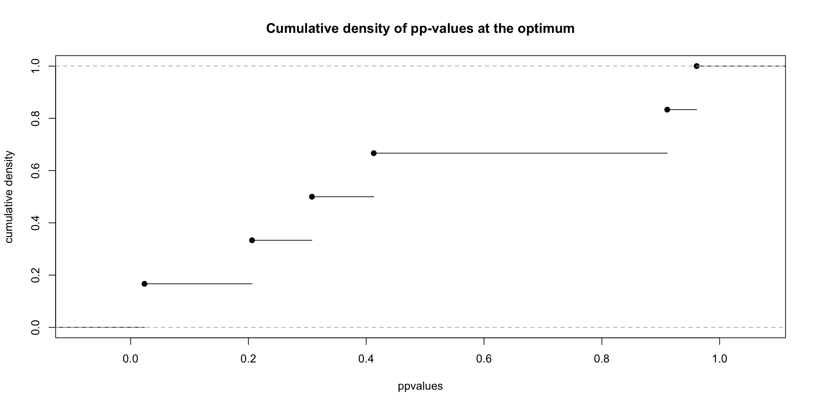
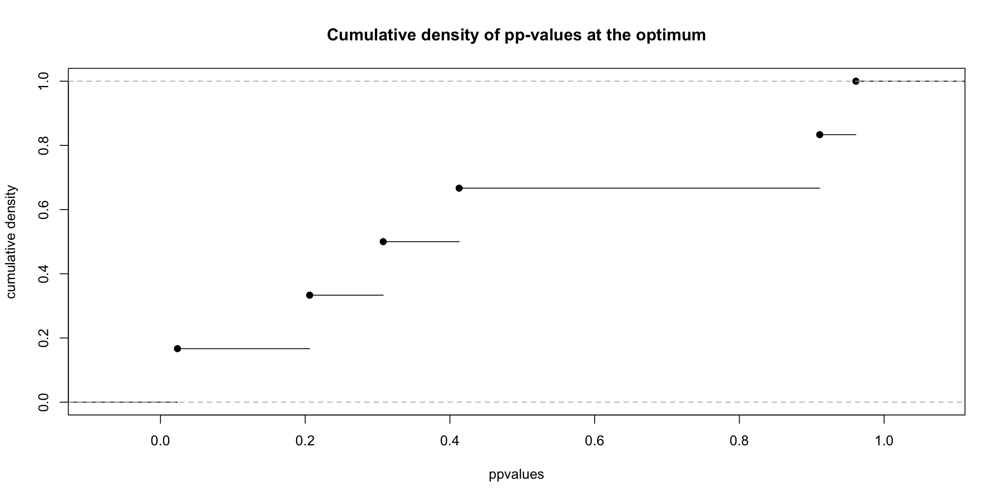
Figure 13.19: Correction for publication bias using p-curving with homogeneous effects
The bias corrected estimate using p-curving in the homogeneous treatment effect case is equal to 0.2, which is spot on. Remember the true treatment effect is 0.2. Let’s see what happens when effects are heterogeneous.
# I'm keeping only significant and positive estimates
# Maybe this could be enforced within the function for ease of reading and use
ppCurveBiasCorrRE <- ppCurveEstES(thetak=filter(data.meta,id<=17,data.meta$ES>0,abs(data.meta$theta.1/sqrt(data.meta$var.ES))>=qnorm((1+delta.2)/2))$theta.1,sigmak=sqrt(filter(data.meta,id<=17,abs(data.meta$theta.1/sqrt(data.meta$var.ES))>=qnorm((1+delta.2)/2))$var.ES),thetacl=0,thetach=10,alpha=0.05,ngrid=100)
plot(ppCurveBiasCorrRE[[2]],ppCurveBiasCorrRE[[3]],xlab="thetac",ylab="KS statistic")
plot(ppCurveBiasCorrRE[[4]],xlab = "ppvalues",ylab="cumulative density",main="Cumulative density of pp-values at the optimum")
curve(punif,add=T)Figure 13.20: Correction for publication bias using p-curving with heterogeneous effects
The bias corrected estimate using p-curving in the heterogeneous treatment effect case is equal to 0.35.
13.2.2.4 Z-curving
See here.
13.2.2.5 Selection models
Publication bias generates a usual pattern for economists: a selection model. The probability that a result is published depends on several properties, let’s say its significance, as measured for example by the t-statistic of a two-sided t-test of the estimated parameter being null. The resulting distribution of observed effect sizes is a truncated or censored distribution compared to the distribution of true effect sizes. It has been a long goal of statisticians and economists to try to recover properties of the distribution of a latent unobserved variable from what is observed (think distribution of wages for women, when labor force participation for women was far lower than it is today).
Statisticians have been using selection models to try to correct for publication bias since at least Hedges. In this section, I’m going to follow closely Andrews and Kasy’s approach. Andrews and Kasy carefully delineate non-parameteric identification of a selection model in the case of heterogeneous treatment effects. They then present ways to estimate the parameters of this model and propose a web-app to perform their estimation strategy.
Andrews and Kasy assume that there is a true treatment effect in all the populations that is equal to \(\theta^*_c\). In each study \(k\), the true treatment effect \(\theta^*_k\) is drawn from a distribution with mean \(\theta^*_c\). If the distribution of \(\theta^*_k\) is degenerate, then we have homogeneous treatment effects. The estimator of \(\theta^*_k\) in each study, \(\hat{\theta}^*_k\), is distributed as a normal centered at \(\theta^*_k\) with variance \(\sigma^{*2}_k\), whose estimator in the sample \(k\) is \(\hat{\sigma}^{*2}_k\). The normality assumption is not too crazy here: it follows from the CLT.
Andrews and Kasy posit that, because of selection bias, we observe only a subset of these latent effects, noted \(\hat{\theta}_k\), those for which \(D_k=1\). \(D_k\) is distributed as a Bernoulli random variable, with probability of success \(p(\hat{Z}_k^*)\), where \(\hat{Z}_k^*=\frac{\hat{\theta}^*_k}{\hat{\sigma}^{*}_k}\) is the test statistic of t-test for the null assumption that \(\theta_k=0\). So Andrews and Kasy assume that all publication bias is driven by the value of the t-statistic \(\hat{Z}_k^*\). Note that it is equivalent to assuming that it is driven by the p-value of this test, since one is a monotone transformation of the other.
As a consequence of the assumed selection model, the density of observed t-stats is (noting \(Z_k^*=\frac{\theta^*_k}{\sigma^{*}_k}\) and \(Z_k=\frac{\theta_k}{\sigma_k}\)):
\[\begin{align*} f_{\hat{Z}|Z}(\hat{z}|z) & = f_{\hat{Z}^*|Z^*,D=1}(\hat{z}|z)\\ & = \frac{\Pr(D_k=1|\hat{Z}_k^*=\hat{z},Z_k^*=z)}{\Pr(D_k=1|Z_k^*=z)}\phi(\hat{z}-z)\\ & = \frac{p(\hat{z})}{\esp{p(\hat{Z}^*_k)|Z_k^*=z}}\phi(\hat{z}-z). \end{align*}\]
The first equality is obtained by using Bayes’ equality twice (once to undo the conditioning on \(D=1\) and once to generate the conditioning on \(Z^*_k=z\)) and the fact that \(f_{\hat{Z}^*|Z^*}\) is normally distributed with mean \(Z^*\) and variance 1.
The key result in Andrews and Kasy is their Proposition 3:
Proof. See Andrews and Kasy’s supplementary material. Let’s detail the proof somehow. The proof works by using the way the density of observed \(\hat{Z}\) changes with precision (\(\hat{\pi_k}=\frac{1}{\hat{\sigma}_k}\)). Without loss of generality, the authors choose to look at the density of \(\hat{Z}\) when \(\hat{\sigma}_k=1\). They define \(h(z)=f_{\hat{Z}^*|\hat{\sigma}^*_k}(z|1)\). The first insight of the proof is that identifying \(h(.)\) identifies \(p(.)\) and the distribution of \(\theta^*_k\), \(f_{\theta^*}\). When \(h(.)\) is identified, \(f_{\theta^*}\) is identified by deconvolution since \(h=f_{\theta^*}*\phi\), where \(*\) is the convolution operator. This is because we can think of \(\hat{\theta}^*_k=\theta^*_k+\epsilon^*_k\), where \(\epsilon^*_k\) is independent from \(\theta^*_k\) (since \(\theta^*_k\Ind\sigma^*_k\)) and follows a normal with mean zero and variance \(\hat{\sigma}^{*2}_k\), here one. The density of a sum of independent random variables is the convolution of their densities, hence the result. Now, we have:
\[\begin{align*} f_{\hat{Z}|\hat{\sigma}}(z|s) & = f_{\hat{Z}^*|\hat{\sigma}^*,D=1}(z|z)\\ & = \frac{\Pr(D_k=1|\hat{Z}_k^*=z,\hat{\sigma}^*_k=s)}{\Pr(D_k=1|\hat{\sigma}_k^*=s)}f_{\hat{Z}^*|\hat{\sigma}^*}(z|s)\\ & = \frac{p(z)}{\esp{p(\hat{Z}^*_k)|\hat{\sigma}^*_k=s}}f_{\hat{Z}^*|\hat{\sigma}^*}(z|s). \end{align*}\]
As a consequence, we have:
\[\begin{align*} p(z)& = \esp{p(\hat{Z}^*_k)|\hat{\sigma}_k^*=s}\frac{f_{\hat{Z}|\hat{\sigma}}(z|s)}{h(z)}. \end{align*}\]
So, once we know \(h(z)\), we know \(p(z)\) up to a constant, since \(f_{\hat{Z}|\hat{\sigma}}(z|s)\) is known by definition, and \(\esp{p(\hat{Z}^*_k)|\hat{\sigma}_k^*=s}\) does not change with \(z\).
In order to identify \(h(z)\), we look at how the density of observed effects changes when precision changes:
\[\begin{align*} g(z) & = \partder{\ln f_{\hat{Z}|\hat{\sigma}}(z|\frac{1}{\pi})}{\pi}|_{\pi=1}\\ & = C_1 + \partder{\ln f_{\hat{Z}^*|\hat{\sigma}^*}(z|\frac{1}{\pi})}{\pi}|_{\pi=1}. \end{align*}\]
\(C_1\) is a constant in \(z\). This is because \(p(z)\) does not depend on \(\pi\) and because \(\esp{p(\hat{Z}^*_k)|\hat{\sigma}_k^*=s}\) does not depend on \(z\). Note that \(g(z)\) is identified in the population.
Now, using the fact that, because \(\theta^*_k\Ind\sigma^*_k\), we have \(h=f_{\theta^*}*\phi\), and thus \(f_{\hat{Z}^*|\hat{\sigma}^*}(z|\frac{1}{\pi})=\int\phi(z-t\pi)df_{\theta^*}(t)\), and the fact that \(\phi'(z)=-z\phi(z)\), we have:
\[\begin{align*} \partder{f_{\hat{Z}^*|\hat{\sigma}^*}(z|1)}{z} & = -\int(z-t)\phi(z-t)df_{\theta^*}(t)\\ \partdersq{f_{\hat{Z}^*|\hat{\sigma}^*}(z|1)}{z} & = - f_{\hat{Z}^*|\hat{\sigma}^*}(z|1) +\int(z-t)^2\phi(z-t)df_{\theta^*}(t)\\ \partder{f_{\hat{Z}^*|\hat{\sigma}^*}(z|\frac{1}{\pi})}{\pi}|_{\pi=1} & = \int t(z-t)\phi(z-t)df_{\theta^*}(t)\\ & = - \left[f_{\hat{Z}^*|\hat{\sigma}^*}(z|1)+z\partder{f_{\hat{Z}^*|\hat{\sigma}^*}(z|1)}{z} + \partdersq{f_{\hat{Z}^*|\hat{\sigma}^*}(z|1)}{z}\right]. \end{align*}\]
The last equation comes from rearranging all the terms in the various terms and factoring what remains. Note that \(f_{\hat{Z}^*|\hat{\sigma}^*}(z|1)\) disappears when you add \(\partdersq{f_{\hat{Z}^*|\hat{\sigma}^*}(z|1)}{z}\). REgrouping under the intergal sign, factoring and simplifying gives the result.
Now, using the expression for \(g(z)\) above, we have a second order differential equation in \(h(.)\):
\[\begin{align*} h''(z) & = (C_1-1-g(z))h(z)-zh'(z). \end{align*}\]
Given \(C_1\) and initial conditions \(h(0)=h_0\) and \(h'(0)=h'_0\), there is a unique solution to this equation, thereby identifying \(h(.)\), \(p(.)\) and \(f_{\theta^*}\). The rest of the proof in Andrews and Kasy’s supplementary material shows that \(C_1\), \(h_0\) and \(h'_0\) are all identified. The proof builds new differential equations involving the second order derivative of \(f_{\hat{Z}|\frac{1}{\pi}}\) with respect to \(\pi\). The constants are identified after successive derivations with respect to \(z\) so that we have an equation for them that depends on the third order derivative of \(g\).Remark. The authors derive an equation for the case where \(\theta^*\) is normally distributed with mean \(\theta\) and variance \(\tau^2\). The second order differential equation becomes:
\[\begin{align*} -\frac{1}{\tau^2+1} & = C_1-g(z)-1+z\frac{z-\theta}{\tau^2+1}-\left(\frac{z-\theta}{\tau^2+1}\right). \end{align*}\]
The authors argue that evaluating this equation for different values of \(z\) pins down \(\theta\) and \(\tau^2\). It seems not enough to prove identification since we need uniqueness of the parameter values obtained. There are already two values of \(\theta\) compatible for agiven \(z\) and \(\tau^2\). We need more to ensure uniqueness.For estimation, Andrews and Kasy follow the approach in Hedges and estimate their model by parametric maximum likelihood. They also propose in their supplementary material an approach based on a Generalized Method of Moments estimator that tries to emulate their identification strategy. Finally, they offer a web-app to implement their most straightforward estimators.
The likelihood can be written as:
\[\begin{align*} f_{\hat{\theta},\hat{\sigma}}(t,s) & = \frac{p\left(\frac{t}{s}\right)\int\phi\left(\frac{t-\theta}{s}\right)f_{\theta^*}(\theta) d\theta} {\int p\left(\frac{t'}{s}\right)\int\phi\left(\frac{t'-\theta}{s}\right)f_{\theta^*}(\theta) d\theta dt'}f_{\sigma}(s). \end{align*}\]
Under the assumption that \(\theta^*\) is normally distributed with mean \(\theta^*_c\) and variance \(\tau^2\), we have the following likelihood:
\[\begin{align*} f^n_{\hat{\theta},\hat{\sigma}}(t,s) & = \frac{p\left(\frac{t}{s}\right)\phi\left(\frac{t-\theta^*_c}{\sqrt{s^2+\tau^2}}\right)} {\int p\left(\frac{t'}{s}\right)\phi\left(\frac{t'-\theta^*_c}{\sqrt{s^2+\tau^2}}\right)dt'}f_{\sigma}(s). \end{align*}\]
Assuming that \(p(.)\) is a step function such that \(p(z)=p_1\) if \(z<1.96\) and \(p(z)=1\) if \(z\geq1.96\), we have:
\[\begin{align*} f^n_{\hat{\theta},\hat{\sigma}}(t,s) & = \frac{p\left(\frac{t}{s}\right)\phi\left(\frac{t-\theta^*_c}{\sqrt{s^2+\tau^2}}\right)} {p_1\Phi\left(\frac{1.96s-\theta^*_c}{\sqrt{s^2+\tau^2}}\right)+1-\Phi\left(\frac{1.96s-\theta^*_c}{\sqrt{s^2+\tau^2}}\right)}f_{\sigma}(s). \end{align*}\]
The likelihood is simply the product of this term computed at each values \(t=\hat{\theta}_k\) and \(s=\hat{\sigma}_k\):
\[\begin{align*} \mathcal{L}(p_1,\theta^*_c,\tau^2)=\Pi_{k=1}^Nf^n_{\hat{\theta},\hat{\sigma}}(\hat{\theta}_k,\hat{\sigma}_k) \end{align*}\]
Taking logs, we see that \(f_{\sigma}(s)\) is a constant that does not contribute to the likelihood.
We solve for the optimal vector of parameters by using a nonlinear optimisation routine.
The authors use nlminb.
One could also probably use optim.
What is nice with these procedures is that they do not require computing the first and second order derivatives of the objective function: they compute them numerically.
Let’s write an R function that maximizes this log likelihood:
# log-likelihood
Lk <- function(thetak,sigmak,p1,thetac,tau){
f <- ifelse(thetak/sigmak<qnorm(1-0.05/2),p1,1)*dnorm((thetak-thetac)/sqrt(sigmak^2+tau^2))/(1-pnorm(qnorm(1-0.05/2)*sigmak-thetac/sqrt(sigmak^2+tau^2))*(1-p1))
return(sum(log(f)))
}
#log-likelihood prepared for nlminb: vector of parameters and minimization
Lk.param <- function(param,thetak,sigmak){
f <- Lk(thetak=thetak,sigmak=sigmak,p1=param[[1]],thetac=param[2],tau=param[3])
return(-f)
}# sample with p1=0: only positive significant results
# homogeneous effects
thetak.FE.0 <- filter(data.meta,id<=17,data.meta$ES>0,abs(data.meta$ES/sqrt(data.meta$var.ES))>=qnorm((1+delta.2)/2))$ES
sigmak.FE.0 <- sqrt(filter(data.meta,id<=17,abs(data.meta$ES/sqrt(data.meta$var.ES))>=qnorm((1+delta.2)/2))$var.ES)
# heterogeneous effects
thetak.RE.0 <- filter(data.meta,id<=17,data.meta$theta.1>0,abs(data.meta$theta.1/sqrt(data.meta$var.ES))>=qnorm((1+delta.2)/2))$theta.1
sigmak.RE.0 <- sqrt(filter(data.meta,id<=17,abs(data.meta$theta.1/sqrt(data.meta$var.ES))>=qnorm((1+delta.2)/2))$var.ES)
# sample with p1=0.1, for insignificant or negative results
p1 <- 0.5
# drawing 10% among insignificant and negative observations
set.seed(1234)
set.FE <- ifelse(runif(length(filter(data.meta,id<=17,data.meta$ES/sqrt(data.meta$var.ES)<qnorm((1+delta.2)/2))$ES))<=p1,1,0)==1
set.seed(1234)
set.RE <- ifelse(runif(length(filter(data.meta,id<=17,data.meta$theta.1/sqrt(data.meta$var.ES)<qnorm((1+delta.2)/2))$theta.1))<=p1,1,0)==1
# homogeneous effects
thetak.FE.1 <- c(thetak.FE.0,filter(data.meta,id<=17,data.meta$ES/sqrt(data.meta$var.ES)<qnorm((1+delta.2)/2))$ES[which(set.FE)])
sigmak.FE.1 <- c(sigmak.FE.0,sqrt(filter(data.meta,id<=17,data.meta$ES/sqrt(data.meta$var.ES)<qnorm((1+delta.2)/2))$var.ES[which(set.FE)]))
# heterogeneous effects
thetak.RE.1 <- c(thetak.RE.0,filter(data.meta,id<=17,data.meta$theta.1/sqrt(data.meta$var.ES)<qnorm((1+delta.2)/2))$theta.1[which(set.RE)])
sigmak.RE.1 <- c(sigmak.RE.0,sqrt(filter(data.meta,id<=17,data.meta$theta.1/sqrt(data.meta$var.ES)<qnorm((1+delta.2)/2))$var.ES[which(set.RE)]))# optimization procedure using nlminb
MaxEval<-10^5
MaxIter<-10^5
Tol<-10^(-8)
stepsize<-10^(-6)
lower.b <- c(0,-Inf,0)
upper.b <- c(1,Inf,Inf)
start.val <- c(0.5,1,1)
optim.Lk.FE.0 <- nlminb(objective=Lk.param, start=start.val,lower=lower.b,upper=upper.b,control=list(eval.max=MaxEval,iter.max=MaxIter,abs.tol=Tol),thetak=thetak.FE.0,sigmak=sigmak.FE.0)
optim.Lk.FE.1 <- nlminb(objective=Lk.param, start=start.val,lower=lower.b,upper=upper.b,control=list(eval.max=MaxEval,iter.max=MaxIter,abs.tol=Tol),thetak=thetak.FE.1,sigmak=sigmak.FE.1)
optim.Lk.RE.0 <- nlminb(objective=Lk.param, start=start.val,lower=lower.b,upper=upper.b,control=list(eval.max=MaxEval,iter.max=MaxIter,abs.tol=Tol),thetak=thetak.RE.0,sigmak=sigmak.RE.0)
optim.Lk.RE.1 <- nlminb(objective=Lk.param, start=start.val,lower=lower.b,upper=upper.b,control=list(eval.max=MaxEval,iter.max=MaxIter,abs.tol=Tol),thetak=thetak.RE.1,sigmak=sigmak.RE.1)paramAK <- rbind(optim.Lk.FE.0$par,optim.Lk.FE.1$par,optim.Lk.RE.0$par,optim.Lk.RE.1$par)
colnames(paramAK) <- c("$p_1$","$\\theta_c$","$\\tau$")
rownames(paramAK) <- c("FE0","FE50","RE0","RE50")
knitr::kable(paramAK,digits=2,caption='Parameter estimates of Andrews and Kasy selection model',align=c('l','c','c','c'),booktabs=TRUE)| \(p_1\) | \(\theta_c\) | \(\tau\) | |
|---|---|---|---|
| FE0 | 0.00 | -100842.0 | 15537.35 |
| FE50 | 0.04 | -245889.4 | 219861.04 |
| RE0 | 0.00 | -5.4 | 0.19 |
| RE50 | 0.03 | -352375.7 | 277781.96 |
Table shows the parameter estimates of the model for various data configurations (no treatment effect heterogeneity vs treatment effect heterogeneity and 0% or 50% of non significant observations published). The results do not look great. The estimates of \(p_1\) are correct when no non significant effects are published, by they are not nearly large enough when \(50\%\) of insignificant observations are published. The estimates of \(\theta_c\) are completely crazy: all negative and large in asbolute value while the true value of \(\theta_c\) is \(\theta_c=\) 0.2. The estimates of \(\tau\) are also all misleading. For fixed effects, the estimates should be zero. For random effects, the true \(\tau\) is \(\tau=\) 0.5. The estimates are much too large, apart from the third one that is close to home. Overall, barring a coding error, selection models do not look super promising here.
13.2.2.6 Fukumura
13.2.2.7 Trim and fill
13.2.3 Getting rid of publication bias: registered reports and pre-analysis plans
13.2.4 Detection of and correction for site selection bias
13.2.5 Vote counting and publication bias
13.2.6 The value of a statistically significant result
Publication bias and random effects